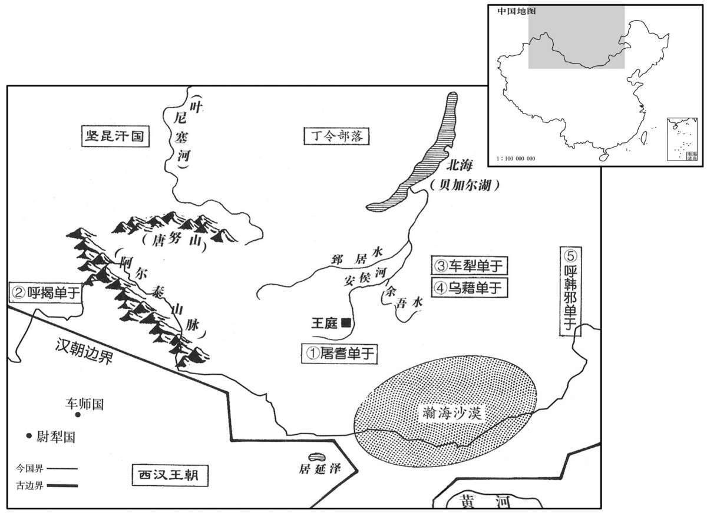
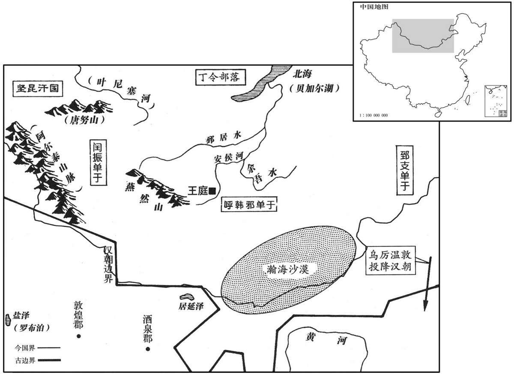
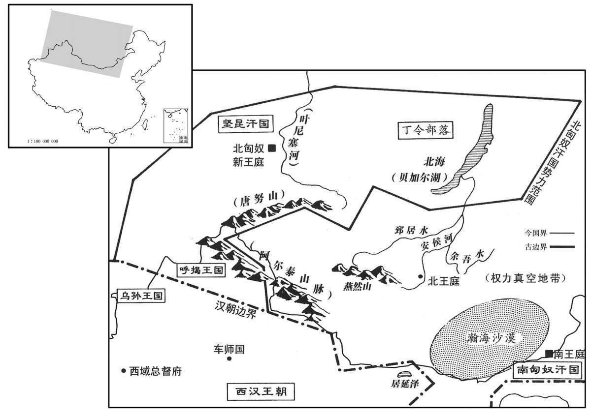

卷次与人物目录 / 卷27
资治通鉴 · 卷第二十七【汉纪十九】
公元前58年至公元前49年 · 原文、白话与胡三省注
本页按胡注本编排保存全卷内容。白话采用本站所据译本，未可靠对应的内容另列说明；事件标题用于定位，并非原书文字。
本卷共74段原文，74段有译文对应，0段缺译或待核对。
卷第二十七【汉纪十九】起昭阳太渊献（癸亥），尽玄黓涒滩（壬申），凡十年。
卷首原文与注释
中宗孝宣皇帝下
公元前58年 · 汉中宗孝宣皇帝神爵四年
神爵四年〔（癸亥、前五八）〕
本年事件索引（现代整理）
春，二月，以凤皇、甘露降集京师，赦天下。
春季，二月，长安有凤凰飞集、甘露降落，因而大赦天下。
颍川太守黄霸在郡前后八年，〔地节四年，颍川太守让入为左冯翊，以霸为颍川太守。至元康三年，霸入守京兆尹；数月，还故官，至是适九年；中间入尹京，是在颍川前后八年。〕政事愈治；〔治，直吏翻；下为治、政治同。〕是时凤皇、神爵数集郡国，〔数，所角翻。〕颍川尤多。夏，四月，诏曰：“颍川太守霸，宣明〔【章：甲十五行本“明”作“布”；乙十一行本同；孔本同。】〕诏令，百姓乡化，孝子、弟弟、〔乡，读曰向。弟弟，上读曰悌。〕贞妇、顺孙日以众多，田者让畔，〔师古曰：畔，田界也。〕道不拾遗，养视鳏寡，赡助贫穷，狱或八年无重罪囚；其赐爵关内侯、黄金百斤、秩中二千石。”而颍川孝、弟、有行义民，〔行，下孟翻。〕三老、力田皆以差赐爵及帛。后数月，征霸为太子太傅。
颍川太守黄霸在颍川郡前后八年，郡中事务治理得愈加出色。当时，凤凰、神雀多次飞集各郡国，其中以颍川郡最多。夏季，四月，汉宣帝颁布诏书说：“颍川太守黄霸，对各项诏令都明确宣示，大力推行，属下百姓向往礼义教化，孝顺父母的子女、相互友爱的兄弟、贞节的妇女、尊敬老人的孙子日益增多，田界相连的农民相互谦让，在路上遗失的东西无人贪心拾取，奉养照顾孤寡老人，帮助贫苦穷弱，有的监狱连续八年没有重罪囚犯。赐黄霸关内侯爵位，黄金一百斤和中二千石俸禄。”对颍川郡中孝顺、友爱和其他具有仁义品行的百姓，以及三老、力田等乡官，都分别赐予不等的爵位和财帛。几个月后，汉宣帝又征调黄霸担任太子太傅。
五月，匈奴单于遣弟呼留若王胜之来朝。〔师古曰：呼留若者，王之号也。胜之，其人名。考异曰：匈奴传：“握衍朐鞮单于立，复修和亲，遣弟伊酋若王胜之入汉献见。”盖即谓此也。〕
五月，匈奴单于派其弟呼留若王胜之前来朝见汉宣帝。
冬，十月，凤皇十一集杜陵。
冬季，十月，十一只凤凰飞集杜陵。
河南太守〔【章：甲十五行本“守”下有“东海”二字；乙十一行本同；孔本同；张校同。】〕严延年为治阴鸷酷烈，众人所谓当死者一朝出之，所谓当生者诡杀之，〔师古曰：诡，违正理而杀也。〕吏民莫能测其意深浅，战栗不敢犯禁。冬月，传属县囚会论府上，〔传，知恋翻，又直恋翻。师古曰：总集郡府而论杀。〕流血数里，河南号曰“屠伯”。〔邓展曰：言延年杀人，如屠儿之杀六畜也。伯，长也。〕延年素轻黄霸为人，及比郡为守，〔师古曰：比，接近也，音频二翻。〕褒赏反在己前，心内不服。河南界中又有蝗虫，府丞义出行蝗，〔行，下孟翻。〕还，见延年。延年曰：“此蝗岂凤皇食邪？”义年老，颇悖，〔师古曰：悖，心恶惑也，音布内翻。〕素畏延年，恐见中伤。延年本尝与义俱为丞相史，实亲厚之，馈遗之甚厚。〔中，竹仲翻。遗，于季翻。〕义愈益恐，自筮，得死卦，忽忽不乐，〔乐，音洛。〕取告至长安，〔师古曰：取告，取休假也。〕上书言延年罪名十事；已拜奏，因饮药自杀，以明不欺。事下御史丞按验，〔百官表：御史大夫有两丞，秩千石；一曰中丞。下，遐稼翻。〕得其语言怨望、诽谤政治数事。十一月，延年坐不道，弃市。
河南太守严延年治理郡务阴狠酷烈，众人认为应处死罪的，被他突然释放；众人认为无死罪的，却被他无端处死。属吏、百姓谁都无法探知其心意如何，所以大家都战战兢兢，不敢违犯其禁令。每到冬季，严延年将所属各县的囚犯传到郡衙集中，进行审判，血流数里，所以河南郡百姓都称其为“屠夫长官”。严延年素来轻视黄霸的为人，及至在相邻的郡担任太守，见朝廷对黄霸的褒奖赏赐反倒超过自己，内心不服。河南郡中出现蝗虫，名叫义的府丞出外巡视蝗灾，回来后，去见严延年。严延年说：“这些蝗虫岂不正好是凤凰的食物吗？”义年纪已老，有些糊涂，平时对严延年就很畏惧，生怕遭到严延年的中伤陷害。本来，严延年曾与义一起当过丞相史，实际上对他很亲厚，这次又送给义非常丰厚礼品。但义却更加恐惧，自己占卦，得到“死卦”，于是闷闷不乐，请假前往长安，上书控告严延年十大罪状。呈上奏章后，便喝毒药自杀，以表明自己不欺骗朝廷。此事被交与御史丞调查核实，查出严延年有在言谈话语中对朝廷心怀怨望，诽谤朝政等几桩罪名。十一月，严延年以“大逆不道”的罪名被斩首示众。
初，延年母从东海来，欲从延年腊；〔风俗通引礼传曰：夏曰嘉平，殷曰清祀，周曰大蜡，汉改曰腊。腊者，猎也，因猎取兽以祭先祖。或曰：新故交接，大祭以报功也。蔡邕独断曰：腊者，岁终大祭，纵吏民宴饮。高堂隆曰：王者各以其行之盛祖，以其终腊。水始于申，盛于子，终于辰，故水行之君以子祖、辰腊。火始于寅，盛于午，终于戌，故火行之君以午祖、戌腊。木始于亥，盛于卯，终于未，故木行之君以卯祖、未腊。金始于巳，盛于酉，终于丑，故金行之君以酉祖、丑腊。土始于未，盛于戌，终于辰，故土行之君以戌祖、辰腊。师古曰：建丑之月为腊祭，因会饮，若今之蜡节也。〕到洛阳，适见报囚，〔师古曰：奏报行决也。原父曰：检寻前后，直谓断决囚为报耳，非奏得报也。如今有司书囚罪，长吏判准断，是所谓报也。〕母大惊，使〔【章：甲十五行本“使”作“便”；乙十一行本同；孔本同。】〕止都亭，〔凡郡县皆有都亭，秦法，十里一亭，郡县治所则置都亭。〕不肯入府。延年出至都亭谒母，母闭合不见。延年免冠顿首合下，良久，母乃见之，因数责延年：〔数，所具翻。〕“幸得备郡守，专治千里，〔守，式又翻。治，直之翻。〕不闻仁爱教化，有以全安愚民；顾乘刑罚，多刑杀人，〔师古曰：顾，反也。乘，因也。〕欲以立威，岂为民父母意哉！”延年服罪，重顿首谢，〔师古曰：重，音直用翻。〕因〔【章：甲十五行本“因”下有“自”字；乙十一行本同；孔本同。】〕为母御归府舍。〔为，于伪翻；下同。〕母毕正腊，〔师古曰：腊及正岁礼毕也。正，音之盈翻。〕谓延年曰：“天道神明，人不可独杀。〔师古曰：言多杀人者，己亦当死也。〕我不意当老见壮子被刑戮也！〔师古曰：言素意不谓如此也。〕行矣，去汝东归，扫除墓地耳！”〔师古曰：言待其丧至也。〕遂去，归郡，见昆弟、宗人，复为言之。后岁余，果败，东海莫不贤智其母。〔师古曰：称其贤智也。〕
当初，严延年的母亲从东海郡来看儿子，打算跟随严延年一起进行腊祭。到洛阳时，正遇到处决囚犯。其母大吃一惊，便留在驿站中，不肯进府。严延年来到驿站谒见母亲，其母紧闭房门，不肯见他。严延年摘 下帽子，在门外崐叩头，过了很长时间，其母才与他相见，并一再责备严延年说：“你有幸当了郡太守，独自管辖方圆一千里的地区，没听说你以仁爱教育、感化百姓，使百姓们得到安定和保全，反而利用刑罚，大量杀人，企图借此树立威严，这岂是作百姓父母官的本意？”严延年再次叩头，表示服罪，并亲自为母亲驾车回到住所。其母在腊祭完毕以后，对严延年说：“天道悠悠，神明在上，杀人者必将为人所杀。想不到我到了暮年，却将看到正当壮年的儿子遭受刑戮！我要走了，离开你东归故乡，打扫墓地去了！”于是离去。回到东海郡，见到严延年的兄弟和族人，又将上面的话说与他们。一年多以后，严延年果然被杀，东海郡人无不赞叹其母的贤明、智慧。
匈奴握衍朐鞮单于暴虐，好杀伐，〔好，呼到翻。〕国中不附。及太子、左贤王数谗左地贵人，〔左地贵人，谓左谷蠡王以下至左大当户统兵者也。数，所角翻。〕左地贵人皆怨。会乌桓击匈奴东边姑夕王，颇得人民，单于怒。姑夕王怨，即与乌禅幕及左地贵人共立稽侯狦为呼韩邪单于，〔狦，先安翻，又所奸翻。〕发左地兵四五万人，西击握衍朐鞮单于，至姑且水北。〔师古曰：且，音子余翻。〕未战，握衍朐鞮单于兵败走，使人报其弟右贤王曰：“匈奴共攻我，若肯发兵助我乎？”〔师古曰：若，汝也；此下亦同。〕右贤王曰：“若不爱人，杀昆弟、诸贵人。各自死若处，无来污我！”〔师古曰：言于汝所居处自死。污，乌故翻。〕握衍朐鞮单于恚，自杀。〔恚，于避翻。〕左大且渠都隆奇亡之右贤王所，〔都隆奇，本立握衍朐鞮单于，故亡。且，子余翻。〕其民尽降呼韩邪单于。〔降，户江翻。〕呼韩〔【章：甲十五行本“韩”下有“邪”字；乙十一行本同；孔本同。】〕单于归庭；数月，罢兵，使各归故地，乃收其兄呼屠吾斯在民间者，立为左谷蠡王，〔谷，音鹿。蠡，卢奚翻；下同。〕使人告右贤贵人，欲令杀右贤王。其冬，都隆奇与右贤王共立日逐王薄胥堂为屠耆单于，发兵数万人东袭呼韩邪单于，呼韩邪单于兵败走。屠耆单于还，以其长子都涂吾西为左谷蠡王，少子姑瞀楼头为右谷蠡王，留居单于庭。〔屠耆使二子守单于庭，而身西还也。师古曰：瞀，音莫构翻。〕
匈奴握衍朐单于暴虐凶残，好杀人，全国上下都离心离德。太子、左贤王又多次诬陷东部地区的贵族，这些人全都感到怨恨。正在此时，乌桓派兵袭击居于匈奴东部边疆的姑夕王，获得大批人口，单于很恼怒。姑夕王害怕单于降罪，便与乌禅幕及东部地区贵族一同拥立稽侯为呼韩邪单于，并征发东部地区军队四五万人，向西进攻握衍朐单于，直抵姑且水北岸。尚未交战，握衍朐单于的军队已先行败逃，派人通知其弟右贤王说：“匈奴人一起攻击我，你肯发兵帮助我吗？”右贤王说：“你不爱惜别人，屠杀兄弟和各位贵族，你就死在自己那里吧，不要来玷污我！”握衍朐单于感到愤恨，自杀而死。左大且渠都隆奇逃到右贤王住地，属下部众全部归降呼韩邪单于。呼韩邪单于回到王庭。数月之后，将军队遣散，命各回本地，找到在民间的兄长呼屠吾斯，立为左谷蠡王，并派人煽动右贤王属下贵族，打算命其杀死右贤王。这年冬天，都隆奇与右贤王共同拥立日逐王薄胥堂为屠耆单于，发兵数万向东进攻呼韩邪单于，呼韩邪单于军队败逃。屠耆单于返回本地，立其长子都涂吾西为左谷蠡王，小儿子姑瞀楼头为右谷蠡王，命二人留居单于王庭。
公元前57年 · 汉中宗孝宣皇帝五凤元年
五凤元年〔（甲子、前五七）〕

本年形势与背景参考图
春，正月，上幸甘泉，郊泰畤。〔畤，音止。〕
春季，正月，汉宣帝前往甘泉，在泰祭祀天神。
皇太子冠。〔冠，古玩翻。考异曰：按宣纪，太子冠在此年，而荀纪于元康三年。疑二疏去位事已云皇太子冠，至是又重复言之，盖误也。〕
皇太子刘举行加冠典礼。
秋，七月，〔【章：甲十五行本无“七月”二字；乙十一行本同。】〕匈奴屠耆单于使先贤掸兄右奥鞬王与乌藉都尉各二万骑屯东方，以备呼韩邪单于。〔掸，音缠，又音田。〕是时西方呼揭王来与唯犁当户谋，〔师古曰：揭，音丘例翻。唯，音弋癸翻。〕共谗右贤王，言欲自立为单于。屠耆单于杀右贤王父子；后知其冤，复杀唯犁当户，〔复，扶又翻。〕于是呼揭王恐，遂畔去，自立为呼揭单于。右奥鞬王闻之，即自立为车犁单于。〔奥，音郁。鞬，居言翻。〕乌藉都尉亦自立为乌藉单于。凡五单于。屠耆单于自将兵东击车犁单于，使都隆奇击乌藉。乌藉、车犁皆败，西北走，与呼揭单于兵合为四万人。乌藉、呼揭皆去单于号，〔去，羌吕翻。〕共并力尊辅车犁单于。屠耆单于闻之，使左大将，都尉将四万骑分屯东方，以备呼韩邪单于，自将四万骑西击车犁单于。车犁单于败，西北走。屠耆单于即引兵西南留闟敦地。〔师古曰：闟，音蹋。敦，音顿，又音对。〕
秋季，七月，匈奴屠耆单于派先贤掸的哥哥右奥王与乌藉都尉各率二万骑兵屯驻于东部地区，以防备呼韩邪单于。此时，匈奴西部呼揭王前来与唯犁当户合谋，一同陷害右贤王，说他想自立为单于。屠耆单于杀死右贤王父子，后得知右贤王冤枉，便又将唯犁当户杀死，于是呼揭王心中害怕，叛逃而去，自立为呼揭单于。右奥王听说后，便自立为车犁单于。乌藉都尉也自立为乌藉单于。于是匈奴一共有了五位单于。屠耆单于亲自率兵向东进攻车犁单崐于，派都隆奇率兵进攻乌藉单于。乌藉、车犁两单于战败，向西北方向退走，与呼揭单于合兵一处，共四万人，乌藉、呼揭都去掉单于称号，共同全力辅助车犁单于。屠耆单于听说后，派左大将、都尉率领骑兵四万分别屯驻于东部，以防备呼韩邪单于，自己亲率骑兵四万向西进攻车犁单于。车犁单于兵败，向西北方向退去。屠耆单于遂即率兵转向西南，留居敦地区。
汉议者多曰：“匈奴为害日久，可因其坏乱，举兵灭之。”诏问御史大夫。萧望之对曰：“春秋，晋士匄帅师侵齐，闻齐侯卒，引师而还，君子大其不伐丧，〔师古曰：士匄，晋大夫范宣子也。公羊传：襄十九年，齐侯环卒。晋士匄帅师侵齐，至谷，闻齐侯卒，乃还。还者何？善辞也。大其不伐丧也。卒，子恤翻。〕以为恩足以服孝子，谊足以动诸侯。前单于慕化乡善，称弟，〔苏林曰：弟，顺也。师古曰：乡，读曰向。弟，音悌。仲冯曰：汉与匈奴尝约为兄弟，此弟直自为弟耳。〕遣使请求和亲，海内欣然，夷狄莫不闻。未终奉约，不幸为贼臣所杀；今而伐之，是乘乱而幸灾也，彼必奔走远遁。不以义动，兵恐劳而无功。宜遣使者吊问，辅其微弱，救其灾患；四夷闻之，咸贵中国之仁义。如遂蒙恩得复其位，必称臣服从，此德之盛也。”上从其议。
汉朝群臣议论匈奴的形势，多数人认为：“匈奴为害多年，可乘其衰败内乱的机会兴兵将其灭亡。”汉宣帝下诏向御史大夫萧望之询问，萧望之回答说：“《春秋》上记载，晋国士率兵征伐齐国，听说齐侯去世的消息，便率兵撤回。君子重视的是，不乘敌国丧乱的机会去进攻，认为恩足以使孝子心服，义足以使诸侯感动。匈奴前任单于仰慕汉朝的礼仪教化，一心向善，自称是汉的小弟弟，派使臣请求和亲，使天下人感到欣慰，四方夷狄外族无不知晓。不幸的是，尚未最后缔约，他已被奸臣所杀。如今若去征伐匈奴，是乘人之危，幸灾乐祸，他们肯定要向远方逃遁。我们兴此不义之师，恐怕会劳而无功。应派使者前去吊丧慰问，并扶助他们于衰弱之中，为之解救灾患，四方外夷听说后，都会尊敬中国的仁义。假如能使匈奴人因汉的恩德复位，必定会对我朝称臣服从，这才称得上是天子的盛德。”汉宣帝听从了萧望之的建议。
冬，十有二月，乙酉朔，日有食之。
冬季，十二月乙酉朔（初一），出现日食。
韩延寿代萧望之为左冯翊。望之闻延寿在东郡时放散官钱千余万，使御史案之。〔师古曰：望之以延寿代己为冯翊，而有能名出己之上，故忌害之，欲陷以罪法。〕延寿闻知，即部吏案校望之在冯翊时廪牺官钱，放散百余万。〔左冯翊属官有廪牺令、丞、尉。师古曰：廪，主藏谷；牺，主养牲；皆所以供祭祀也。校，居孝翻。〕望之自奏：“职在总领天下，闻事不敢不问，而为延寿所拘持。”上由是不直延寿，各令穷竟所考。望之卒无事实。〔卒，子恤翻。〕而望之遣御史案东郡者，得其试骑士日〔【章：甲十五行本“日”下有“车服侍卫”四字；乙十一行本同；孔本同；退斋校同。】〕奢僭逾制；〔师古曰：试骑士，每岁大试也。余谓即都试也。据延寿传：治饰兵车，画龙、虎、朱爵。延寿衣黄纨方领，驾四马，传总，建幢棨，植羽葆，鼓车、歌车。功曹引车，皆驾四马，建棨戟。五骑为伍，分左右部，军假司马、千人持幢旁毂。歌者先居射室，望见延寿车，噭啕楚歌。延寿坐射室，骑吏持戟夹陛列立，骑士从者带弓鞬罗后。令骑士、兵车四面营陈，被甲鞮鍪，居马上，抱弩负兰。又使骑士戏车、弄马、盗骖。所谓奢僭逾制者也。噭，音叫。啕，音他钓翻。〕又取官铜物，候月食铸刀剑，〔【章：甲十五行本无“剑”字；乙十一行本同。】〕效尚方事；〔据刘向传，上令典尚方铸作事。师古注曰：尚方，铸巧作金银之所，若今之中尚署。又汉制尚方主作御刀剑。〕及取官钱〔【章：十五行本“钱”下有“帛”字；乙十一行本同；孔本同；张校同。】〕私假徭使吏；〔师古曰：假，谓顾赁也。〕及治饰车甲三百万以上。〔治，直之翻。〕延寿竟坐狡猾不道，弃市。吏民数千人送至渭城，老小扶持车毂，争奏酒炙。〔师古曰：奏，进也。炙，之夜翻，燔肉也。〕延寿不忍距逆，人人为饮，〔为，于伪翻。〕计饮酒石余。使掾、史分谢送者：“远苦吏民，延寿死无所恨！”百姓莫不流涕。
韩延寿代替萧望之担任左冯翊。萧望之听说韩延寿在东郡太守任上，曾发放官府之钱一千余万，便派御史前去调查，韩延寿听到消息，也派人调查萧望之在左冯翊任内发放属于廪牺令掌管的一百多万钱之事。萧望之上奏说：“我的职责是总领天下监察事务，听到有人检举，就不敢不闻不问，却受到韩延寿的要挟。”汉宣帝因此认为韩延寿不对，命分别调查到底。结果指控萧望之动用官钱一事并无事实根据，而萧望之派到东郡的御史却查出韩延寿在考试骑兵之日，奢侈豪华，超过规定；又动用官铜，仿照尚方铸造御用刀剑之法，等到月食时铸造刀剑；还动用官钱，私自雇用管理徭役的官吏；并加装自己车辆的防箭设施，花费在三百万钱以上。韩延寿竟因此被指控犯有“狡猾不道”之罪，斩首示众。行刑时，官吏和百姓数千人送他到渭城，人们扶老携幼，攀住韩延寿的囚车车轮不放，争相进奉酒肉。韩延寿不忍拒绝，一一饮用，共计喝酒一石有余，并让原属下官吏分别向前来送他的百姓致谢，说道：“辛苦各位远程相送，我死而无恨！”百姓无不痛哭流涕。
公元前56年 · 汉中宗孝宣皇帝五凤二年
五凤二年〔（乙丑、前五六）〕

本年形势与背景参考图
春，正月，上幸甘泉，郊泰畤。〔考异曰：宣纪云：“三月，行幸甘泉。”荀纪作“正月”。按汉制，常以正月郊祀。盖荀悦作纪之时，本犹未误也。又杨恽传曰：“行必不至河东矣。”盖时亦幸河东祠后土，史脱之也。〕
春季，正月，汉宣帝前往甘泉，在泰祭祀天神。
车骑将军韩增薨。五月，将军许延寿为大司马、车骑大将军。
车骑将军韩增去世。五月，将军许延寿被任命为大司马、车骑大将军。
丞相丙吉年老，上重之。萧望之意常轻吉，上由是不悦。丞相司直奏望之遇丞相礼节倨慢，〔时繁延寿为丞相司直。师古曰：繁，音婆。〕又使吏买卖，私所附益凡十万三千，〔师古曰：使其吏为望之家有所买卖，而吏以其私钱增益之，用润望之也。〕请逮捕系治。秋，八月，壬午，诏左迁望之为太子太傅；以太子太傅黄霸为御史大夫。
丞相丙吉年事已高，汉宣帝很尊重他。萧望之常轻视丙吉，汉宣帝对此很不高兴。丞相司直上奏弹劾萧望之，说他对丞相时傲慢无礼，又曾派属下官吏给自己家买卖东西，被派者私下贴钱共十万三千，请求将萧望之逮捕治罪。秋季，八月壬午（初二），汉宣帝下诏将萧望之降为太子太傅，任命太子太傅黄霸为御史大夫。
匈奴呼韩邪单于遣其弟右谷蠡王等西袭屠耆单于，屯兵杀略万余人。〔谷蠡，音鹿黎。〕屠耆单于闻之，即自将六万骑击呼韩邪单于。屠耆单于兵败，自杀。都隆奇乃与屠耆少子右谷蠡王姑瞀楼头亡归汉。车犁单于东降呼韩邪单于。〔降，户江翻；下同。〕冬，十一月，呼韩邪单于左大将乌厉屈与父呼遫累乌厉温敦皆见匈奴乱，率其众数万人降汉；封乌厉屈为新城侯，乌厉温敦为义阳侯。〔师古曰：呼遫累，其官号也。遫，古速字。累，音力追翻。功臣侯表，新城侯食邑于汝南之细阳；义阳侯食邑于南阳之平氏。考异曰：宣纪。“匈奴呼遫累单于帅众来降。”功臣表：“信成侯，王定以匈奴乌桓屠蓦单于子左大将军率众降，侯。义阳侯，厉温敦以匈奴呼连累单于率众降，侯。”此即屈与敦也。未尝为单于，或降时自称单于；或纪、表二者误也。〕是时李陵子复立乌藉都尉为单于，〔复，扶又翻。〕呼韩邪单于捕斩之；遂复都单于庭，然众裁数万人。屠耆单于从弟休旬王自立为闰振单于，在西边；〔从，才用翻。〕呼韩邪单于兄左贤王呼屠吾斯亦自立为郅支骨都侯单于，在东边。
匈奴呼韩邪单于派其中弟右谷蠡王等向西进攻屠耆单于的军队，斩杀、掳掠一万余人。屠耆单于闻知后，立即亲自率领骑兵六万袭击呼韩邪单于。结果屠耆单于兵败自杀。都隆奇便与屠耆单于的小儿子右谷蠡王姑瞀楼头逃到汉朝归降。车犁单于向东归降呼韩邪单于。冬季，十一月，呼韩邪单于属下左大将乌厉屈与其父呼累乌厉温敦见匈奴内乱不止，率领部众数万人归降汉朝。汉宣帝封乌厉屈为新城侯，乌厉温敦为义阳侯。此时，李陵之子又拥立乌藉都尉为单于，被呼韩邪单于捕杀。于是，呼韩邪单于重新定都单于王庭，但部众只有数万人。屠耆单于的堂弟休旬王在匈奴西部边疆自立为闰振单于；呼韩邪单于的兄长左贤王呼屠吾斯也在东部边疆自立为郅支骨都侯单于。
光禄勋平通侯杨恽，〔功臣侯表，平通侯食邑于汝南之博阳。〕廉洁无私；然伐其行能，〔伐，矜也。行，身所行也。能，才所堪也。行，下孟翻。〕又性刻害，好发人阴伏，〔好，呼到翻。〕由是多怨于朝廷。与太仆戴长乐相失；〔乐，音洛。〕人有上书告长乐罪，长乐疑恽教人告之，亦上书告恽罪曰：“恽上书讼韩延寿，郎中丘常谓恽曰：『闻君侯讼韩冯翊，当得活乎？』恽曰：『事何容易，〔易，以豉翻。〕胫胫者未必全也！〔师古曰：胫胫，直貌也。胫，下顶翻。〕我不能自保，〔师古曰：言我尚不能自保，讼人何以得活。〕真人所谓“鼠不容穴，衔窭数”者也。』〔李奇曰：真人，正人也。如淳曰：所以不容穴，正坐衔窭数自妨，故不得入穴也。师古曰：窭数，戴盆器也。以盆盛物戴于头者，则以窭数荐之。今卖白团饼人所用者是也。窭，音其羽翻。数，音山羽翻。〕又语长乐曰：〔语，牛倨翻。〕『正月以来，天阴不雨，此春秋所记，夏侯君所言。』”〔张晏曰：夏侯胜谏昌邑王曰：“天久阴不雨，臣下必有谋上者。”春秋无久阴不雨之异也。汉史记胜所言，故曰春秋所记，谓说春秋灾异耳。师古曰：春秋有不雨事，说者因论久阴，附着之也。张晏谓汉史为春秋，失之矣。〕事下廷尉。〔下，遐稼翻。〕廷尉定国奏恽怨望，为訞恶言，〔于定国也。訞，与妖同。〕大逆不道。上不忍加诛，有诏皆免恽、长乐为庶人。〔考异曰：宣纪：“十二月，杨恽坐前为光禄勋有罪，免为庶人。不悔过，怨望，大逆不道，要斩。”荀纪因而用之。恽传：“恽与孙会宗书曰：『臣之得罪已三年矣。』又因日食之变，驺马猥佐成上书告恽罪，下狱死。又杨谭称杜延年为御史大夫。按百官表，恽以神爵元年为光禄勋，五年免。戴长乐亦以其年为太仆，五年免。杜延年以五凤三年，六月，辛酉为御史大夫。又按萧望之传：“使光禄勋恽策免望之”，其事在今年八月，恽犹为光禄勋。至四年四月，乃有日蚀之变。盖恽以今年十二月免为庶人，至四年乃死。宣纪误也。〕
光禄勋平通侯杨恽，廉洁无私，但爱夸耀自己的才干，为人尖刻，好揭人隐私，所以在朝中结怨很多。杨恽与太仆戴长乐不合，有人上书控告戴长乐之罪，戴长乐怀疑是杨恽指使，便也上书控告杨恽说：“杨恽上书为韩延寿辩护，郎中丘常对杨恽说：‘听说你为韩延寿辩解，能救他一命吗？’杨恽说：‘谈何容易！正直的人未必能保全！我也不能自保，正如人们所说：“老鼠不为洞穴所容，只因它嘴里衔的东西太大。”’又曾对我说：‘正月以来，天气久阴不下雨，这类事，《春秋》上有过记载，夏侯胜也说到过。意味着将有臣下犯上作乱。’”此事交给廷尉处理。廷尉于定国上奏参劾杨恽心怀怨望，恶言诽谤，大逆不道。汉宣帝不忍心杀人，下诏将杨恽、戴长乐全都免官贬为平民。
公元前55年 · 汉中宗孝宣皇帝五凤三年
五凤三年〔（丙寅、前五五）〕
本年事件索引（现代整理）
春，正月，癸卯，博阳定侯丙吉薨。
春季，正月癸卯（二十六日），博阳侯丙吉去世。
班固赞曰：古之制名，必由象类，远取诸物，近取诸身。〔易大传有是言。〕故经谓君为元首，臣为股肱，〔师古曰：谓虞书益稷云：“元首明哉，股肱良哉”也。〕明其一体相待而成也。是故臣相配，古今常道，自然之势也。近观汉相，高祖开基，萧、曹为冠；〔师古曰：名位在众人之上也。余谓此言其相业冠群后耳。冠，古玩翻。〕孝宣中兴，丙、魏有声。是时黜陟有序，〔黜，降也。陟，升也。〕众职修理，公卿多称其位，〔称，尺证翻。〕海内兴于礼让。览其行事，岂虚呼哉！〔师古曰：言君明臣贤，所以致治，非徒然。〕
班固赞曰：古代确定一件事物的名称，必定从与此相类似的事物中得来，远的取之于其他事物，近的取之于自身。所以在儒家经典中，将君王比喻为头颅，臣子比喻为大腿和手臂，表明君臣一体相辅相成的关系。所以君臣之间的密切配合，是古今的通常之理，自然之势。近观汉朝丞相，汉高祖开创基业，萧何、曹参政绩第一；汉宣帝中兴汉朝，丙吉、魏相最有声誉。当时，各级官员的降黜、升迁都有相应的标准，各类机构健全、适当，公卿大臣大都各称其职，礼让之风在国内兴起。观察他们的所作所为，就可知道他们的政绩、名誉崐，并非偶然所致。
本段人物：萧何
二月，壬辰，黄霸为丞相。霸材长于治民，及为丞相，功名损于治郡。〔治，直之翻。〕时京兆尹张敞舍鹖雀飞集丞相府，〔苏林曰：今虎贲所着鹖也。师古曰：苏说非也。此鹖，音芬，字本作鳻，此通用耳。鳻雀大而色青，出羌中，非武贲所着也。武贲鹖者色黑，出上党，以其斗死不止，故用其羽饰武臣首云，今时俗所谓鹖鸡者也；音曷，非此鳻雀也。〕霸以为神雀，议欲以闻。敞奏霸曰：“窃见丞相请与中二千石、博士杂问郡、国上计长史、守丞为民兴利除害，成大化，〔为，于伪翻。〕条其对。有耕者让畔，男女异路，道不拾遗，及举孝子，贞妇者为一辈，先上殿；〔师古曰：丞相所坐屋也。古者屋之高严，通呼为殿，不必宫中也。余据郑玄周礼注，汉司徒府有天子以下大会殿。后汉之司徒府，则前汉之丞相府也。〕举而不知其人数者，次之；不为条教者在后。叩头谢丞相，口虽不言，而心欲其为之也。长史、守丞对时，臣敞舍有鹖雀飞止丞相府屋上，丞相以下见者数百人。边吏多知鹖雀者，问之，皆阳不知。丞相图议上奏〔师古曰：图，谋也。〕曰：『臣问上计长史、守丞以兴化条，〔师古曰：凡言条者，一一而疏举之，若木条然也。〕皇天报下神爵。』后知从臣敞舍来，乃止。郡国吏窃笑丞相仁厚有知略，〔知，与智同。〕微信奇怪也。臣敞非敢毁丞相也，诚恐群臣莫白，〔恐群臣莫敢白其事也。〕而长史、守丞畏丞相指，归舍法令，各为私教，〔师古曰：舍，废也，读曰舍。〕务相增加，浇淳散朴，〔师古曰：不杂为淳，以水浇之则味漓薄。朴，大质也。割之，散也。〕并行伪貌，有名亡实，〔亡，古无字通。〕倾摇解怠，〔师古曰：解，读曰懈。〕甚者为妖。〔妖，于骄翻。〕假令京师先行让畔、异路、道不拾遗，其实亡益廉贪、贞淫之行，〔亡，古无字通。行，下孟翻。〕而以伪先天下，〔先，悉荐翻。〕固未可也。即诸侯先行之，伪声轶于京师，〔师古曰：轶，过也，音逸。〕非细事也。汉家承敝通变，造起律令，所以劝善禁奸，条贯详备，不可复加。〔复，扶又翻。〕宜令贵臣明饬长史、守丞，〔师古曰：饬，读与敕同。〕归告二千石，举三老、孝弟、力田、孝廉、廉吏，务得其人，郡事皆以法令为〔【章：甲十五行本无“为”字；乙十一行本同；孔本同。】〕检式，〔师古曰：检，局也，音居俭翻。〕毋得擅为条教；敢挟诈伪以奸名誉者，必先受戮，〔师古曰：奸，求也，音干。〕以正明好恶。”〔好，呼到翻。恶，乌路翻。〕天子嘉纳敞言，召上计吏，使侍中临饬，如敞指意。霸甚惭。
二月壬辰（疑误），黄霸被任命为丞相。黄霸的才能主要在治理百姓，当了丞相以后，声誉比作郡守时有所下降。当时，京兆尹张敞家的雀飞集丞相府，黄霸以为是神雀，与人商议，准备奏闻汉宣帝。张敞上奏说：“我看到丞相要求与中二千石大臣及博士等一同向来京报告本年度工作情况的各郡、国长史、守丞询问为民兴利除害、推行教化的情况，让他们逐条回答。有报告当地农民谦让田地界线，男女不走一条道，路不拾遗，以及能举出当地孝顺子孙、贞节妇女人数的，列为一等，先上殿；虽然举出，却不知其人数的，列为二等；说不出这方面政绩的，列在最后，向丞相叩头谢罪。丞相虽未明言，心中却是希望他们也能举出这方面的例子。长史、守丞对答时，我家有一群雀飞到丞相府，落在屋顶上，自丞相以下，看到的有数百人。那些从边地来的官吏，大多知道是雀，但丞相问他们，却都装作不知道。丞相与人商议，准备上奏说：‘我问各郡、国来京报告工作的长史、守丞各地的情况，都说礼义教化大兴，所以上天派下神雀以回报陛下的盛德。’后来得知是从我家飞来，方才停止。各郡、国官吏都暗笑丞相虽然仁厚有智，但有些轻信奇闻怪事。我并不是敢于诋毁丞相，只是怕群臣谁都不敢说明此事，而各郡、国长史、守丞又畏惧丞相指责，回去后废弃国家法令，人人执行自己的条令，竞相增多，使原本淳朴的风气变得日益浮薄，人人行为虚伪，有名无实，动摇懈怠，严重的甚至做邪恶之事。假如京师长安率先倡导农民互相谦让田地界线，男女不同走一路，道不拾遗等等，实际上对区分廉洁贪婪、贞节淫乱的行为并无益处，反倒以虚伪的政绩列为天下第一，这当然是不对的。即使是封国先这样作，以虚假政绩欺骗朝廷，也不是小事。我大汉承接了秦朝的各种弊端，加以变通而制定法令，目的在于鼓励善行，禁止奸恶，条理详实周密，已不能再有增加。所以我认为，应派地位尊贵的大臣明确指示各郡、国长史、守丞，回去转告各地二千石官员，在保举三老、孝弟、力田、孝廉及廉洁官吏时，务必选人得当，处理郡、国事务都应以国家法令为依据，不得擅自增加、修改。如有敢于靠弄虚作假来欺世盗名者，必须先受诛杀，用以明确显示朝廷的好恶。”汉宣帝对张敞的建议极为赞赏，予以采纳，召集各地来京报告工作的官员，派侍中前往发布指示，如同张敞的建议。黄霸深感惭愧。
又，乐陵侯史高以外属旧恩侍中，贵重，〔乐陵县，属平原郡。师古曰：乐，音来各翻。史高者，帝祖母史良娣兄恭之长子。〕霸荐高可太尉。天子使尚书召问霸：“太尉官罢久矣。〔尚书，属少府。成帝建始四年，增置为五员。自文帝罢太尉官，至景帝以周亚夫为太尉，寻罢。至武帝，以田蚡为太尉；罢后，不复除授。〕夫宣明教化，通达幽隐，使狱无冤刑，邑无盗贼，君之职也。将相之官，朕之任焉。〔师古曰：言欲拜将相，自在朕也。〕侍中、乐陵侯高，帷幄近臣，朕之所自亲，〔师古曰：言具知其材质。〕君何越职而举之？”〔丞相职，总百官，进贤退不肖。霸荐史高，以为所荐非其人可也，以为越职则非也。盖自武帝以来，丞相之失其职也久矣。〕尚书令受丞相对，〔后汉志：尚书令，承秦所置。武帝用宦者更为中书谒者令。成帝用士人，复故，掌凡选署及奏下尚书曹文书众事。帝既使尚书召问霸，故使尚书令受其对也。尚书令、中书令，沈约以为两官。注已见前。〕霸免冠谢罪，数日，乃决，〔师古曰：乃得免罪也。〕自是后不敢复有所请。〔复，扶又翻。〕然自汉兴，言治民吏，以霸为首。〔治，直之翻。〕
再有，乐陵侯史高依靠外戚的身分及对汉宣帝的旧时恩义，担任侍中，地位尊贵、显赫，黄霸推荐史高担任太尉。汉宣帝派尚书召见黄霸问道：“太尉一职早已撤销。你的职责是：宣明教化，让隐情上达，使国家无冤狱，城乡无盗贼。将相一类官员的任免是朕的任务。侍中、乐陵侯史高，是朕的亲近大臣崐，朕对他非常了解，你为何越权保举？”命尚书令听取黄霸的回答。黄霸摘下帽子谢罪。数日之后，汉宣帝才下令对此事不予追究。从此以后，黄霸再也不敢有所建议。然而，自汉朝建立以来。说到治理百姓的官吏，黄霸居第一位。
三月，上幸河东，祠后土。减天下口钱；〔如淳曰：汉仪注：民年七岁至十四出口赋钱，人二十三：二十钱以食天子；其三钱者，武帝加口钱以补车骑马。〕赦天下〔【章：甲十五行本无“天下”二字；乙十一行本同；孔本同。】〕殊死以下。
三月，汉宣帝巡游河东郡，祭祀后土神。下诏减少天下人头税，赦免天下死刑以下罪犯。
六月，辛酉，以西河太守杜延年为御史大夫。〔考异曰：荀纪作“辛巳”，百官表作“辛西”。按长历，此月丙午朔，无辛巳。〕
六月辛酉（十六日），汉宣帝任命西河太守杜延年为御史大夫。
置西河、北地属国以处匈奴降者。〔处，昌吕翻。〕
设置西河、北地属国，以安置归降汉朝的匈奴人。
广陵厉王胥使巫李女须祝诅上，求为天子。〔师古曰：女须者，巫之名也。祝，职救翻。诅，庄助翻。〕事觉，药杀巫及宫人二十余人以绝口。公卿请诛胥。
广陵王刘胥让巫师李女须诅咒汉宣帝，求神灵保佑他自己作皇帝。此事被人发觉，刘胥用毒药将巫师李女须以及宫女二十余人毒死，企图杀人灭口。公卿大臣请求将刘胥处死。
公元前54年 · 汉中宗孝宣皇帝五凤四年
五凤四年〔（丁卯、前五四）〕
上传原文的注释括号有异常，字符原样保留；无法可靠划分的段落默认全文显示。
本年事件索引（现代整理）

本年形势与背景参考图
春，胥自杀。
春季，刘胥自杀。
匈奴单于称臣，遣弟右〔【章：甲十五行本无“右”字；乙十一行本同；孔本同。】〕谷蠡王入侍。〔考异曰：按匈奴传：“呼韩邪称臣，即遗铢娄渠堂入侍，”事在明年。时匈奴有三单于，不知此单于为谁也。余按通鉴据班纪而书此事，又参考匈奴传以明其异。〕以边塞亡寇，〔亡，古无字通。〕减戍卒什二。
匈奴单于向汉朝称臣，派其弟右谷蠡王到长安来充当人质。汉朝因边塞地区没有了外族入侵的战事，将屯戍兵卒减少十分之二。
大司农中丞耿寿昌奏言：“岁数丰穰，谷贱，农人少利。〔时谷石五钱，所谓谷贱伤农者。数，所角翻。少，诗沼翻。〕故事：岁漕关东谷四百万斛以给京师，用卒六万人。直籴三辅、弘农、河东、上党、太原郡谷，足供京师，可以省关东漕卒过半。”上从其计。寿昌又白：“令边郡皆筑仓，以谷贱增其贾而籴，〔【章：甲十五行本“籴”下有“以利农”三字；乙十一行本同；孔本同；张校同；退斋校同。】〕谷贵时减贾而粜，〔贾，读曰价。〔名曰常平仓。”〔常平仓始此。〕民便之。上乃下诏赐寿昌爵关内侯。
大司农中丞耿寿昌上奏说：“连续几年丰收，谷价低，农民获利少。按以往惯例，每年从函谷关以东地区运输粮食四百万斛以供应京师，需用运粮卒六万人。应从三辅、弘农、河东、上党、太原等郡购买粮食，以供应京师，可以节省函谷关以东运粮卒一半以上。”汉宣帝接受了耿寿昌的建议。耿寿昌又禀告说：“命令沿边各郡一律修建粮仓，在粮价低时加价买进，粮价高时减价售出，名为‘常平仓’。”百姓因此受益。汉宣帝于是下诏赐耿寿昌关内侯爵。
夏，四月，辛丑朔，日有食之。
夏季，四月辛丑朔（初一），出现日食。
杨恽既失爵位，家居治产业，以财自娱。其友人安定太守西河孙会宗与恽书，谏戒之，为言“大臣废退，当阖门惶惧，为可怜之意；〔师古曰：阖，闭也。为，于伪翻。〕不当治产业，通宾客，有称誉。”〔治，直之翻。〕恽，宰相子，〔恽，宰相杨敞之子也。〕有材能，少显朝廷，〔少，诗照翻。〕一朝以暗昧语言见废，〔暗，与暗同。〕内怀不服，报会宗书曰：“窃自思念，过已大矣，行已亏矣，〔行，下孟翻。〕常为农夫以没世矣，是故身率妻子，戮力耕桑，不意当复用此为讥议也！〔复，扶又翻。〕夫人情所不能止者，圣人弗禁；故君、父至尊、亲，送其终也，有时而既。〔师古曰：君至尊，父至亲。张晏曰：丧不过三年；臣见放逐，降居三月复初。师古曰：既，已也。原父曰：恽但云送终三年，本不及放逐三月也。余谓恽之此言，实因废弃而有怨望之意。〕臣之得罪，已三年矣，田家作苦，岁时伏腊，〔作苦，谓耕作劳苦也。史记：秦作伏祠，改蜡曰腊。释名曰：伏者，金气伏藏之日也。金畏火，故三伏皆庚日。历忌曰：四时代谢，皆以相生。至于立秋，以金代火。金畏火，故庚日必伏。毛晃曰：夏有三伏，冬有腊，故称岁时伏腊。〕烹羊，炮羔，〔师古曰：炮羔，炙肉也，即今所谓爊也。余按羊子曰羔，未离乳者也；其肉嫩美。炮，音步交翻。〕斗酒自劳，〔劳，音来到翻。〕酒后耳热，仰天拊缶而呼乌乌，〔应劭曰：缶，瓦器也；秦人击之节歌。师古曰：缶，即今之盆类也。李斯上秦王书云：“击瓮，叩缶，弹筝，搏髀而歌呼乌乌快耳者，真秦声也。”是关中旧有此曲。〕其诗曰：『田彼南山，芜秽不治；种一顷豆，落而为萁。〔治里曰田，音堂练翻。诗云：无田甫田。张晏曰：山高而在阳，人君之象也。芜秽不治，言朝廷之荒乱也。一顷，百亩；以喻百官也。言豆贞实之物，当在囷仓，零落在野，喻己见放弃也。萁，曲而不直，言朝臣皆谄谀也。师古曰：萁，豆茎也，音基。治，直之翻。〕人生行乐耳，〔乐，音洛。〕须富贵何时！』〔师古曰：须，待也。〕诚荒淫无度，不知其不可也。”〔师古曰：自谓为可也。〕又恽兄子安平侯谭〔恽兄忠，袭父敞爵。安平侯忠卒，谭嗣。〕谓恽曰：“侯罪薄，又有功，〔谓恽有发霍氏谋反之功也。〕且复用！”〔复，扶又翻。〕恽曰：“有功何益！县官不足为尽力。”〔为，于伪翻。〕谭曰：“县官实然。盖司隶、韩冯翊皆尽力吏也，俱坐事诛。”〔盖司隶事见上卷神爵二年。韩冯翊事见上元年。盖，古盍翻。〕会有日食之变，驺马猥佐成上书告“恽骄奢，不悔过。〔如淳曰：驺马，以给驺使乘之；佐，主猥马吏也，有史有佐，名成也。〕日食之咎，此人所致。”章下廷尉，按验，得所多会宗书，帝见而恶之。〔下，遐稼翻。予，读曰与。恶，乌路翻。〕廷尉当恽大逆无道，要斩；〔师古曰：当，谓处断其罪。要，与腰同。〕妻子徙酒泉郡；谭坐免为庶人，诸在位与恽厚善者，未央卫尉韦玄成及孙会宗等，皆免官。
杨恽失掉封爵、官位后，住在家里治理产业，用财富自我娱乐。杨恽的朋友安定太守西河人孙会宗写信劝戒他说：“大臣被罢黜贬谪之后，应当闭门在家，惶恐不安，以示可怜之意。不应治理产业，交结宾客，享有声誉。”杨恽为丞相杨敞之子，很有才干，年轻时就在朝廷中崭露头角，一时受到暖昧语言的中伤，遭到罢黜，内心不服，给孙会宗回信说：“我暗自思量，自己的崐过错已太大了，行为已有亏欠，将长久做一名农夫度过一生，所以率领妻子儿女，致力于农桑之事，想不到又因此受人讥评！人情所不能克制的事，连圣人都不加禁止。所以即使是至尊无上的君王，至亲无比的父亲，为他们送终，也有一定的时限。我得罪皇上，已三年了，农家劳作辛苦，每年伏日、腊月，煮羊炖羔，用酒一斗，自我犒劳，酒后耳热，仰面朝天，敲着瓦盆，放声吟唱，诗中写道：‘南山种田，荒芜杂乱，种一顷豆，落地成秧。人生不过及时乐，等待富贵何时来！’就算是荒淫无度，我不知不可以如此。”再有，杨恽兄长的儿子安平侯杨谭对杨恽说：“你的罪并不大，又曾于国有功，将会再次被任用。”杨恽说：“有功又有什么用！不值得为皇上尽力！”杨谭说：“皇上确实如此。司隶校尉盖宽饶、左冯翊韩延寿都是尽力的官吏，都因事被诛杀。”正巧出现日食，一个名叫成的马夫头上书控告杨恽说：“杨恽骄傲奢侈，不思悔过。这次出现日食，就是因为杨恽的关系。”奏章交给廷尉，经过核查，发现了杨恽写给孙会宗的信，汉宣帝看了以后，对杨恽深恶痛绝。廷尉判处杨恽大逆不道之罪，腰斩；妻、儿放逐酒泉郡；杨谭受其牵连，也被贬为平民；几位与杨恽关系友善的在职官员，如未央卫尉韦玄成和孙会宗等，都被罢免官职。
史家评论 · 原文及其白话
臣光曰：以孝宣之明，魏相、丙吉为丞相，于定国为廷尉，而赵、盖、韩、杨之死皆不厌众心，〔厌，于赡翻，满也。〔【章：甲十五行本“心”下有“惜哉”二字；乙十一行本同；孔本同；张校同；退斋校同。】〕其为善政之累大矣！〔累，力瑞翻。〕周官司寇之法，有议贤、议能，〔周官：小司寇之职，以八辟丽邦法，附刑罚，三曰议贤之辟，四曰议能之辟。郑玄注曰：贤，谓有德行者。能，谓有道艺者。郑众曰：若今时廉吏有罪先请，是也。〕若广汉、延寿之治民，可不谓能乎！〔治，直之翻。〕宽饶、恽之刚直，可不谓贤乎！然则虽有死罪，犹将宥之，况罪不足以死乎！扬子以韩冯翊之愬萧为臣之自失。〔扬子：或问臣之自失，曰：韩冯翊之愬萧，赵京兆之犯魏。〕夫所以使延寿犯上者，望之激之也。上不之察，而延寿独蒙其辜，不亦甚哉！
臣司马光曰：以汉宣帝的英明，加上魏相、丙吉当丞相，于定国当廷尉，而赵广汉、盖宽饶、韩延寿、杨恽的被杀都不能使众人心服，这实在是汉宣帝善政的最大污点！《周官》上关于司寇职责的规定，有“议贤”、“议能”，象赵广汉、韩延寿在治理百姓方面，能不说他们有才能吗！而盖宽饶、杨恽刚强正直，能不说他们贤明吗！既然这样，那么即使真有死罪，仍应宽恕，何况罪不至死呢！扬雄认为，韩延寿诽谤萧望之是自取其祸。但韩延寿之所以冒犯上官，则是因萧望之的逼迫。汉宣帝不察究竟，使韩延寿独受其辜，不是太过分了吗！
匈奴闰振单于率其众东击郅支单于。郅支与战，杀之，并其兵；遂进攻呼韩邪。呼韩邪兵败走，郅支都单于庭。〔郅支忘呼韩邪树立之恩，以兄弟而寻干戈，为汉所诛，宜矣。〕
匈奴闰振单于率领军队向东进攻郅支单于。郅支单于与其交战，杀死闰振单于，兼并了闰振单于的军队，于是进攻呼韩邪单于。呼韩邪单于兵败退走，郅支单于建都单于王庭。
公元前53年 · 汉中宗孝宣皇帝甘露元年
甘露元年〔（戊辰、前五三）〕〔以甘露降纪元。说文：露，润泽也。五经通义：和气津凝为露也。蔡邕月令曰：露者，阴之液也。〕
本年事件索引（现代整理）

本年形势与背景参考图
春，正月，行幸甘泉，郊泰畤。
春季，正月，汉宣帝前往甘泉，在泰祭祀天神。
杨恽之诛也，公卿奏京兆尹张敞，恽之党友，不宜处位。〔处，昌吕翻。〕上惜敞材，独寝其奏，不下。〔师古曰：天子惜敞，故留所奏事不出。下，遐稼翻。〕敝使掾絮舜有所案验，〔李奇曰：絮，音挐。师古曰：絮，姓也，音女居翻，又音人余翻。舜，其名。〕舜私归其家曰：“五日京兆耳，〔舜以敝被奏当免，在位不久也。〕安能复案事！”〔复，扶又翻。〕敞闻舜语，即部吏收舜系狱，昼夜验治，竟致其死事。〔罪不至死，而以事致之，所谓文致也。治，直之翻。〕舜当出死，敞使主簿持教告舜曰：“五日京兆竟何如？冬月已尽，延命乎？”〔主簿，处郡合下，主文簿，因以名官。师古曰：言汝不欲望延汝命乎！〕乃弃舜市。会立春，行冤狱使者出，〔行，下孟翻。〕舜家载尸并编敞教，〔师古曰：编，联也；联之于章前也。〕自信使者。使者奏敞贼杀不辜。上欲令敞得自便，〔师古曰：从轻法以免也。〕即先下敞前坐杨恽奏，免为庶人。〔下，遐稼翻。〕敞诣阙上印绶，〔上，时掌翻。〕便从阙下亡命。〔此即令之得自便也。师古曰：亡命，不还其本县邑也。贤曰：命，名也。谓脱其名籍而逃亡。〕数月，京师吏民解弛，〔师古曰：弛，放也。解，读曰懈，或如字。〕枹鼓数起，〔盗贼多也。枹，音肤。数，所角翻；下同。〕而冀州部中有大贼，天子思敞功效，使使者即家在所召敞。〔师古曰：就其所居处而召之。〕敞身被重劾，〔师古曰：谓前有贼杀不辜之事。劾，户概翻；下同。〕及使者至，妻子家室皆泣〔【章：甲十五行本“泣”下有“惶惧”二字；乙十一行本同；孔本同；张校同；退斋校同。】〕而敞独笑曰：“吾身亡命为民，郡吏当就捕。今使者来，此天子欲用我也。”装随使者，〔治行装而随使者也。〕诣公车上书曰：“臣前幸得备位列卿，待罪京兆，〔西都之制，为三辅者列于九卿。待罪者，谦言也。谓身居其官而于称职，则将有瘝旷之罪，故谓居职为待罪。西都之臣率有是言。〕坐杀掾絮舜。舜本臣敞素所厚吏，数蒙恩贷；〔师古曰：贷，音土带翻。宥罪有贷。〕以臣有章劾当免，受记考事，〔师古曰：记，书也；若今之州县为符教也。〕便归卧家，谓臣五日京兆。背恩忘义，〔背，蒲妹翻。〕伤薄俗化。臣窃以舜无状，枉法以诛之。臣敞贼杀不辜，鞠狱故不直，虽伏明法，死无所恨！”天子引见敞，〔见，贤遍翻。〕拜为冀州刺史。〔冀州部魏郡、巨鹿、常山、清河等郡；广平、真定、中山、信都、河间等国。考异曰：荀纪载于五凤二年，因杨恽事，并致此误也。百官表：“敞以神爵元年为京兆尹，八年免。”敞传云：“为京兆九岁免。”〕敞到部，盗贼屏迹。〔屏，必郢翻。〕
杨恽被杀之后，公卿上奏弹劾京兆尹张敞，说他是杨恽的朋党，不应再占据官位。汉宣帝爱惜张敞的才干，特将奏章压下不发。张敞派下属官员絮舜调查某事，絮舜私自回家，说道：“张敞这个京兆尹最多再干五天罢了，怎能再来查问！”张敞听说絮舜如此说他，立即派官吏将絮舜逮捕下狱，昼夜审崐讯，终于使他被定成死罪。絮舜被杀之前，张敞派主簿拿着他写的教，告诉絮舜：“我这个‘五天京兆尹’究竟怎么样？冬季已经过去，想多活几天吗？”于是将絮舜斩首示众。适逢立春，朝廷派出调查冤狱的使者，絮舜的家属抬着絮舜的尸体，将张敞写给絮舜的教联在辩冤状上，向使者控告张敞。使者上奏汉宣帝，称张敞残杀无辜。汉宣帝打算对张敞从轻发落，便先将以前弹劾张敞为杨恽朋党的奏章发下，将其免官，贬为平民。张敞到宫门前交还印绶，然后从宫门前逃走。数月之后，京师官吏百姓懈怠，多次敲响追捕盗贼的警鼓，冀州也出现巨盗。汉宣帝想起张敞为政的功效，派使臣前往张敞家征召张敞。张敞身遭严厉弹劾，当朝廷使臣到来，其妻子、家属都吓哭了，只有张敞笑着说：“我是一个逃亡的平民，应由郡中派官员来逮捕我。如今朝廷使臣到来，这是天子要起用我。”于是整治行装，随使臣前往公车府，上书汉宣帝说：“我先前有幸位列九卿，担任京兆尹，被指控杀死属员絮舜。絮舜本是我平时厚待的官吏，曾几次加恩宽恕他的过失。他认为我受人弹劾，当会免官，所以我派他去查办事情，他竟然回家睡大觉，说我只能再当五天京兆尹，实在是忘恩负义，伤风败俗。我因他态度恶劣，便借法令以泄私愤，将他诛杀。我残杀无辜，判案故意不公，即使伏法，也死而无恨！”汉宣帝召见张敞，任命他为冀州刺史。张敞到任后，盗贼敛迹不敢再出。
皇太子柔仁好儒，见上所用多文法吏，以刑绳下，常〔【章：甲十五行本“常”作“尝”；乙十一行本同。】〕侍燕从容:“陛下持刑太深，宜用儒生。”〔好，呼到翻；下同。从，千容翻。〕帝作色曰：〔师古曰：作，动也。意怒故动色。〕“汉家自有制度，本以霸王道杂之；柰何纯任德教，用周政乎！〔师古曰：姬周之政。〕且俗儒不达时宜，〔风俗通曰：儒者，区也，言其区别古今。居则翫圣哲之辞，动则行典籍之道，稽先王之制，立当时之事，此通儒也。若能纳而不能出，能言而不能行，讲诵而已，无能往来，此俗儒也。〕好是古非今，使人眩于名实，〔师古曰：眩，乱视也，音胡眄翻。〕不知所守，何足委任！”乃叹曰：“乱我家者太子也！”
皇太子刘性格温柔仁厚，喜欢儒家经术，看到汉宣帝任用的官员大多为精通法令的人，依靠刑法控制臣下，曾在陪侍汉宣帝进餐的时候，从容进言说：“陛下过于依赖刑法，应重用儒生。”汉宣帝生气地说：“我大汉自有大汉的制度，本来就是‘王道’与‘霸道’兼用，怎能像周朝那样，纯用所谓‘礼义教化’呢！况且俗儒不识时务，喜欢肯定古人古事，否定今人今事，使人分不清何为‘名’，何为‘实’，不知所守，怎能委以重任！”于是叹息道：“败坏我家基业的人将是太子！”
史家评论 · 原文及其白话
臣光曰：王霸无异道。昔三代之隆，礼乐、征伐自天子出，则谓之王。天子微弱不能治诸侯，诸侯有能率其与同讨不庭以尊王室者，则谓之霸。〔庭，直也。不庭，不直也。一说以诸侯不朝为不庭。治，直之翻。〕其所以行之也，皆本仁祖义，任贤使能，赏善罚恶，禁暴诛乱；顾名位有尊卑，德泽有深浅，功业有巨细，政令有广狭耳，非若白黑、甘苦之相反也。汉之所以不能复三代之治者，由人主之不为，非先王之道不可复行于后世也。〔复，扶又翻。〕夫儒有君子，有小人。〔论语：孔子谓子夏曰：汝为君子儒，毋为小人儒。谢显道为之说曰：志于义则大，是以谓之君子；忘于利则小，是以谓之小人。〕彼俗儒者，诚不足与为治也，〔治，直吏翻；下同。〕独不可求真儒而用之乎！稷、契、皋陶、伯益、伊尹、周公、孔子，皆大儒也，〔契，息列翻。陶，音遥。〕使汉得而用之，功烈岂若是而止邪！孝宣谓太子懦而不立，暗于治体，必乱我家，则可矣；乃曰王道不可行，儒者不可用，岂不过哉！非〔【章：甲十五行本“过”下有“甚矣”二字；乙十一行本同；孔本同。甲十五行本“非”上有“殆”字；乙十一行本同；孔本同。】〕所以训示子孙，垂法将来者也。
臣司马光曰：“王道”与“霸道”，并无实质的不同。过去，夏、商、周三代昌盛时，无论是制礼作乐，还是发动战争，都由天子决定，则称之为“王道”。天子微弱，不能控制诸侯时，诸侯中有能率领盟国共同征讨叛逆以尊奉王室的，则称之为“霸道”。无论行“王道”还是“霸道”，都以仁义为根据，任用贤能，奖赏善美，惩罚邪恶，禁绝凶残，诛除暴乱。二者只不过于名位上有尊卑之分，德泽上有深浅之别，功业上有大小之差，政令上有广狭之异罢了，并非像黑白、甘苦那样截然相反。汉朝之所以不能恢复夏、商、周三代那样的盛世，是因为君王没有去做，并不是古代圣王之道不能再行于后世。在儒者中，有君子，也有小人。像汉宣帝所说的那种“俗儒”，当然不能同他们治理天下，但难道就不能访求“真儒”而任用吗！像后稷、契、皋陶、伯益、伊尹、周公、孔子，都是大儒，假如汉朝能得到他们而予以重用，汉朝的功业岂能只像现在这样！汉宣帝说太子懦弱不能自立，不懂得治国的方法，必然将败坏刘氏基业，这是可以的；可是说“王道”不可实行，儒者不可任用，岂不是太过分了！不能以此来训示子孙，留给后人效法。
淮阳宪王好法律，〔淮阳王钦，上次子也。好，呼到翻。〕聪达有材；王母张倢伃尤幸。〔倢伃，音接予。〕上由是疏太子而爱淮阳宪王，数嗟叹宪王曰：“真我子也！”常有意欲立宪王，然用太子起于微细，上少依倚许氏，〔疏，读曰疎。数，所角翻。少，诗照翻。依倚许氏事见二十四卷昭帝元平元年。〕及即位而许后以杀死，〔事见二十四卷本始三年。〕故弗忍也。久之，上拜韦玄成为淮阳中尉，以玄成尝让爵于兄，〔事见二十五卷元康四年。〕欲以感谕宪王；由是太子遂安。
淮阳王刘钦喜欢研究法律，聪明通达，很有才干。其母张特别受汉宣帝宠爱。因此，汉宣帝疏远太子刘，疼爱淮阳王刘钦，曾几次赞叹刘钦说：“真是我的儿子！”曾有意要立刘钦为太子，但因刘生于自己微贱之时，那时自己曾靠刘的母亲许氏娘家照顾，而即位后，许皇后又被人害死，所以不忍心。过了很长一段时间，汉宣帝任命韦玄成为淮阳中尉，因韦玄成曾让爵位给其兄长，汉宣帝想以此感动、教育刘钦。于是太子的地位才稳固了。
匈奴呼韩邪单于之败也，左伊秩訾王为呼韩邪计，〔师古曰：訾，音子移翻。〕劝令称臣入朝事汉，从汉求助，如此，匈奴乃定。呼韩邪问诸大臣，皆曰：“不可。匈奴之俗，本上气力而下服役，〔师古曰：以服役于人为下。〕以马上战斗为国，故有威名于百蛮。战死，壮士所有也。〔师古曰：言人皆有此事耳。余谓壮士健则战死，乃本分必有之事。〕今兄弟争国，不在兄则在弟，〔郅支，兄也。呼韩邪，弟也。〕虽死犹有威名，子孙常长诸国。〔师古曰：为诸国之长帅也。长，知两翻；下同。〕汉虽强，犹不能兼并匈奴；柰何乱先古之制，臣事于汉，卑辱先单于，〔师古曰：言忝辱之，更令卑下也。余谓此言先单于与汉争为长雄，而今单于臣事之，是卑辱先单于于地下也。〕为诸国所笑！虽如是而安，何以复长百蛮！”〔复，扶又翻。〕左伊秩訾曰：“不然，强弱有时。今汉方盛，乌孙城郭诸国皆为臣妾。自且鞮侯单于以来，匈奴日削，不能取复，〔且鞮侯单于，呼韩邪之曾祖也。复，报也。且，子余翻。〕虽屈强于此，〔师古曰：屈，音其勿翻。〕未尝一日安也。今事汉则安存，不事则危亡，计何以过此！”诸大人相难久之。〔难，乃旦翻。〕呼韩邪从其计，〔从左伊秩訾王之计也。〕引众南近塞，〔近，其靳翻。〕遣子右贤王铢娄渠堂入侍。〔师古曰：铢，音殊。娄，音力于翻。〕郅支单于亦遣子右大将驹于利受入侍。
匈奴呼韩邪单于被郅支单于打败之后，左伊秩訾王为呼韩邪单于出谋划策，劝他称臣归附汉朝，请求汉朝帮助，这样做了，才能平定匈奴内乱。呼韩邪单于征求各位大臣的意见，都说：“不行。我们匈奴的风俗，历来崇尚力量，耻于在下面服侍别人，靠马上征战建立国家，所以威名才传遍蛮夷各国。战死沙场，是壮士的本分。如今我们内部兄弟争国，不是哥哥得到，就是弟弟得到，即使战死，仍有威名，子孙永远统辖蛮夷各国。汉朝虽然强大，仍不能吞并匈奴，我们为何败坏先祖的制度，向汉朝称臣，使历代先王蒙受羞辱，被各国耻笑！即使能因此而得到安定，又怎能再统辖蛮夷各国！”左伊秩訾王说道：“不对，强弱之势，随时间的推移而改变。如今汉朝正当兴盛，乌孙等城邦国家都已向汉朝称臣。我国自且侯单于以来，势力日益削减，不能恢复，尽管倔强至今，却未曾有一天安宁。而今，称臣于汉，则得以安全生存；如果不肯屈服，必陷于危亡境地。还有什么计策比这更好呢？”各位大臣不断对左伊秩訾王提出诘难，最后，呼韩邪单于终于接受了左伊秩訾王的建议，率众南下，向汉朝边塞靠近，派其子右贤王铢娄渠堂到长安做人质。郅支单于也派其子右大将驹于利受到长安做人质。
二月，丁巳，乐成敬侯许延寿薨。〔恩泽侯表，乐成侯食邑于南阳之平氏。〕
二月丁巳（二十一日），乐成侯许延寿去世。
夏，四月，黄龙见新丰。〔见，贤遍翻。〕
夏季，四月，在新丰发现黄龙。
丙申，太上皇庙火；甲辰，孝文庙火；上素服五日。
丙申（初一），太上皇祭庙失火；甲辰（初九），汉文帝祭庙失火。汉宣帝素服五日。
乌孙狂王复尚楚主解忧，〔复，扶又翻。〕生一男鸱靡，不与主和；又暴恶失众。汉使卫司马魏和意、副侯任昌至乌孙。〔侯，卫侯也；为和意之副。任，音壬。〕公主言：“狂王为乌孙所患苦，易诛也。”〔易，以豉翻。〕遂谋置酒，使士拔剑击之。剑旁下，〔师古曰：不正下也。〕狂王伤，上马驰去。其子细沈瘦会兵围和意、昌及公主于赤谷城；〔师古曰：瘦，音搜。赤谷城，乌孙国都，去长安八千九百里。〕数月，都护郑吉发诸国兵救之，乃解去。汉遣中郎将张遵持医药治狂王，赐金帛；〔治，直之翻。〕因收和意、昌系琐，〔系琐，即今云锁索也。〕从尉犁槛车至长安，斩之。
乌孙狂王泥靡又娶楚公主刘解忧为妻，生下一子，取名鸱靡。狂王与公主关系不和睦，又暴戾凶恶，不得众人之心。汉朝派卫司马魏和意为使臣，卫侯任昌为副使来到乌孙。公主说：“狂王给乌孙带来灾患困苦，杀他很容易。”于是定计，设置酒宴，派武士拔剑刺杀狂王。但剑锋刺偏，狂王受伤，上马奔驰而去。狂王之子细沈瘦率兵将魏和意、任昌以及公主等包围在赤谷城中。数月之后，都护郑吉征调西域各国军队前来救援，围城之兵方才离去。汉朝派中郎将张遵携带医药来给狂王医治，并赏赐黄金丝帛；将魏和意、任昌锁拿，从尉犁用囚车押解到长安，处斩。
初，肥王翁归靡胡妇子乌就屠，狂王伤时，惊，与诸翎侯俱去，居北山中，〔其山在乌孙之北也。翎，与翕同，音许及翻。〕扬言母家匈奴兵来，故众归之；后遂袭杀狂王，自立为昆弥。是岁，汉遣破羌将军辛武贤将兵万五千人至敦煌，通渠积谷，欲以讨之。〔时立表穿渠于卑鞮侯井以西。孟康曰：大井六，通渠也。下流涌出在白龙堆东土山下。敦，徒门翻。〕
当初，乌孙肥王翁归靡与匈奴妻子生的儿子乌就屠，在狂王受伤时惊恐不崐安，与乌孙诸翎侯一齐逃走，藏在北方的山中，扬言其母亲娘家匈奴派兵前来，所以乌孙百姓纷纷归附于他。后乌就屠袭杀狂王，自立为王。这一年，汉朝派破羌将军辛武贤率兵一万五千来到敦煌，疏通河道，积聚粮食，准备征讨乌就屠。
初，楚主侍者冯嫽，〔师古曰：嫽，音了。嫽者，慧也，故以为名。〕能史书，〔史，吏也。犹言吏书也。〕习事，〔内习汉事，外习西域诸国事也。〕尝持汉节为公主使，〔使，疏吏翻。〕城郭诸国敬信之，号曰冯夫人，为乌孙右大将妻。〔乌孙国官，相大禄之下有左、右大将二人，盖贵入也。〕右大将与乌就屠相爱，都护郑吉使冯夫人说乌就屠，〔说，输芮翻。〕以汉兵方出，必见灭，不如降。乌就屠恐，曰：“愿得小号以自处！”〔处，昌吕翻。〕帝征冯夫人，自问状；〔即此事与数诏问赵充国事参而观之，诵鉴所纪一千三百余年间，明审之君，一人而已。〕遣谒者竺次、期门甘延寿为副，送冯夫人。冯夫人锦车持节，〔应劭曰：锦车，以锦衣车也。〕诏乌就屠诣长罗侯赤谷城，立元贵靡为大昆弥，〔元贵靡，肥王翁归靡嫡长男，楚主解忧所生也。事始上卷神爵二年。〕乌就屠为小昆弥，皆赐印绶。破羌将军不出塞，还。后乌孙屠不尽归翎侯人〔【章：甲十五行本“归”下有“诸”字；“人”作“民”；乙十一行本同；孔本同。】〕众，汉复遣长罗侯将三校屯赤谷，因为分别〔【章：甲十五行本“别”下有“其”字；乙十一行本同；孔本同。】〕人民地界，〔复，扶又翻。校，户教翻。别，彼列翻。〕大昆弥户六万余，小昆弥户四万余；然众心皆附小昆弥。〔为汉以两昆弥忧劳张本。〕
当初，刘解忧的侍女冯能够撰写文书，了解汉朝与西域各国事务，所以曾携带汉朝符节为公主出使，各城邦国对她尊敬信任，称其为冯夫人。她是乌孙右大将的妻子。右大将与乌就屠是亲密朋友，所以都护郑吉派冯劝说乌就屠：汉朝军队即将出击，乌孙必将被汉军所灭，不如归降。乌就屠感到恐慌，说道：“希望汉朝封我一个小王名号，使我得以安身。”汉宣帝征召冯来京师，亲自询问乌孙情况，然后派冯乘坐锦车，携带皇帝符节作为正使，以谒者竺次、期门甘延寿为副使，护送冯来到乌孙，传达汉宣帝诏令，命乌就屠到赤谷城去见长罗侯常惠，立元贵靡为大昆弥，乌就屠为小昆弥，都赐予印信、绶带。破羌将军辛武贤未曾出塞，即率兵撤回。后乌就屠不肯将翎侯的部众全部归还，于是汉朝又派长罗侯常惠率领三位军校所属部队屯兵赤谷城，为乌孙划分人口和地界，大昆弥统辖六万余户，小昆弥统辖四万余户。然而，乌孙民众全都心向小昆弥。
公元前52年 · 汉中宗孝宣皇帝甘露二年
甘露二年〔（己巳、前五二）〕
本年事件索引（现代整理）
春，正月，立皇子嚣为定陶王。〔考异曰：诸侯王表，“十月乙亥立，”今据宣纪。〕
春季，正月，汉宣帝立皇子刘嚣为定陶王。
诏赦天下，减民算三十。〔师古曰：一算减钱三十也。汉律，人出一算，算百二十钱。〕
汉宣帝颁布诏书，大赦天下，减少百姓的人头税三十钱。
珠郡反。夏，四月，遣护军都尉张禄将兵击之。〔百官表：护军都尉，秦官；武帝元狩四年属大司马。〕
珠崖郡造反。夏季，四月，汉宣帝派护军都尉张禄率兵镇压。
杜延年以老病免。五月，己丑，廷尉于定国为御史大夫。
杜延年因年老多病，被免除职务。五月己丑（初一），廷尉于定国被任命为御史大夫。
秋，七〔【章：甲十五行本“七”作“九”；乙十一行本同；孔本同；退斋校同。】〕月，立皇子宇为东平王。
秋季，七月，汉宣帝立皇子刘宇为东平王 。
冬，十二月，上行幸萯阳宫、属玉观。〔应劭曰：萯阳宫在鄠，秦文王所起。伏俨曰：在扶风。李斐曰：萯，音倍。师古曰：应说、李音是也。服虔曰：属玉观，以玉饰，因名焉，在扶风。李奇曰：属玉，音鷟鸑。其上有此鸟，因以为名。晋灼曰：属玉，水鸟，似䴔䴖，以名观也。师古曰：晋说是也。属，音之欲翻。观，工玩翻。〕
冬季，十二月，汉宣帝巡游阳宫、属玉观。
是岁，营平壮武侯赵充国薨。〔恩泽侯表：营平侯，食邑于济南。夫以赵充国之贤之功，而班史列之恩泽侯者，以其初封以定策功也。如卫青、霍去病本以破匈奴功封，而班史亦列于恩泽侯，以其由卫思后戚属得进也。班史书法，犹有古史官典刑，后之为史者不复知此矣。〕先是，充国以老乞骸骨，赐安车、驷马、黄金，罢就弟。〔先，悉荐翻。弟，与第同。〕朝廷每有四夷大议，常与参兵谋、〔师古曰：与读曰豫。〕问筹策焉。
这一年，营平侯赵充国去世。先前，赵充国因年老请求退休。汉宣帝赐给他安车、四匹马和黄金，解除他的职务，让他回家休养。每当朝廷有关于四方外夷的大事商议，赵充国仍参与议定战略，为朝廷顾问、筹划。
匈奴呼韩邪单于款五原塞，〔师古曰：款，叩也。按班志，汉五原郡即秦九原郡，治稒阳；别有五原县。宋白曰：汉五原故城，在今胜州榆林县界。〕愿奉国珍，朝三年正月。〔师古曰：欲于甘露三年正月行朝礼。朝，直遥翻。〕诏有司议其仪。丞相、御史曰：“圣王之制，先京师而后诸夏，先诸夏而后夷狄。匈奴单于朝贺，其礼仪宜如诸侯王，位次在下。”〔此议犹依傍成周盛时朝诸侯之制。先、后，皆去声。〕太子太傅萧望之以为：“单于非正朔所加，〔言班历所不及也。〕故称敌国，宜待以不臣之礼，位在诸侯王上。外夷稽首称藩，中国让而不臣，此则羁縻之谊，谦亨之福也。〔望之此议，取春秋传王者不治夷狄之意。马络曰羁，牛靷曰縻。言其在荒服，待之若马牛然，取羁縻不绝而已。师古曰：易谦卦之辞曰：谦，亨，天道下济而光明，地道卑而上行。言谦之为德，无所不通也。亨，火庚翻。〕书曰：『戎狄荒服』，〔师古曰：逸书也。余谓此语，或者伏生之书有之，今国语犹载此言。〕言其来服荒忽亡常。〔亡，古无字通。〕如使匈奴后嗣卒有鸟窜鼠伏，阙于朝享，〔朝，朝见也。享，供时享也。享，献也。古者诸侯见于天子，必以所贡助祭于庙。孝经所谓“四海之内，各以其职来祭”者也。卒，读曰猝；师古子恤翻。〕不为畔臣，〔师古曰：卒，终也。谓本以客礼待之；若后不来，非叛臣。〕万世之长策也。”天子采之，下诏曰：“匈奴单于称北蕃，朝正朔。〔谓朝明年正月朔也。〕朕之不德，不能弘覆。〔覆，敷救翻。〕其以客礼待之，令单于位在诸侯王上，赞谒称臣而不名。”
匈奴呼韩邪单于抵达五原边塞，表示愿奉献本国珍宝，于甘露三年正月来长安朝见汉宣帝。汉宣帝下诏命主管官员商议朝见仪式。丞相、御史大夫都说：“依古代圣王的制度，先京师而后诸侯，先诸侯而后夷狄。匈奴单于前崐来朝贺，其礼仪应与诸侯王相同，位次排在诸侯王之后。”太子太傅萧望之认为：“单于不奉汉朝正朔，本不是我国的臣属，所以称为匹敌之国，应不用臣属的礼仪对待他，使其位次在诸侯王之上。外夷向我国低头，自愿居于藩属地位；我国谦让，不以臣属之礼对待他，为的是笼络于他，显示我国的谦虚大度。《尚书》有言：‘戎狄外族很难驯服’，说明外夷的归附反复无常。如果将来匈奴的后代子孙突然像飞鸟远窜、老鼠潜伏一般不再前来朝见进贡，也不算我国的背叛之臣，这才是万代的长远策略。”汉宣帝采纳了萧望之的意见，下诏说：“匈奴单于自称我国北方藩属，将于明年正月初一前来朝见。朕的恩德不够，不能受此隆重大礼。应以国宾之礼相待，使单于的位次在诸侯王之上，拜谒时只称臣，不具名。”
荀悦论曰：春秋之义，王者无外，欲一于天下也。〔春秋之义，王者无外，故天王有入无出，大夫出不言奔，欲一乎天下也。〕戎狄道里辽远，人迹介绝，故正朔不及，礼教不加，非尊之也，其势然也。诗云：“自彼氐、羌，莫敢不来王。”〔商颂殷武之诗也。〕故要、荒之君必奉王贡；若不供职，则有辞让号令加焉，〔国语：祭公谋父曰：“蛮夷要服，戎狄荒服。要服者贡，荒服者王。有不贡则修名，有不王则修德。于是让不贡，告不王。于是有威让之令，有文告之辞。”要，一遥翻。〕非敌国之谓也。望之欲待以不臣之礼，加之王公之上，僭度失序，以乱天常，非礼也！若以权时之宜，则异论矣。
荀悦论曰：按照《春秋》大义，君王不分内外，以表示要天下一统。戎狄外族因相距遥远，人事隔绝，所以中国的“正朔”传不过去，中国的礼义教化不加之于他们身上，并非是尊重他们，而是形势所致，不得不然。《诗经》上说：“氐族、羌族全在内，谁敢不来朝天子。”所以距离极远的外族君主，也必向天子朝贡。如不前来朝贡，则向其发出斥责和号令，不应称之为匹敌之国。萧望之打算不以臣属之礼相待，使其位居王公之上，是僭越制度，丧失秩序，扰乱天理纲常，违背了礼！但如果是一时的权宜之计，则又当别论。
诏遣车骑都尉韩昌迎单于，发所过七郡二千骑为陈道上。〔按汉书“郡”下又有“郡”字。师古注曰：所过之郡，每为发兵陈列于道，以为宠卫也。七郡，谓过五原、朔方，西河、上郡、北地、冯翊而后至长安也。为，于伪翻。〕
汉宣帝下诏派车骑都尉韩昌前去迎接单于，征调沿途七郡二千名骑兵陈列于道旁。
公元前51年 · 汉中宗孝宣皇帝甘露三年
甘露三年〔（庚午、前五一）〕
本年事件索引（现代整理）
春，正月，上行幸甘泉，郊泰畤。
春季，正月，汉宣帝前往甘泉，在泰祭祀天神。
匈奴呼韩邪单于来朝，赞谒称藩臣而不名；赐以冠带、衣裳，黄金玺、盭绶，〔白虎通：衣者，隐也；裳者，障也；所以隐形自障蔽也。玺，斯氏翻。绶，音受。师古曰：盭，古戾字。戾，草名也。以戾染绶，亦诸侯王之制也。〕玉具剑、佩刀，弓一张，矢四发，〔孟康曰：玉具剑，摽首、镡、卫尽用玉为之也。师古曰：镡，剑口旁横出者也。卫，剑鼻也。镡，音淫。“卫”字本作“彘”，其音同耳。服虔曰：发，十二矢也。韦昭曰：射礼，三而止，每射四矢，故以十二为一发也。师古曰：发，犹今言箭一放、两放也。今则以一矢为一放也。〕棨戟十，〔师古曰：棨，有衣之戟也。棨，音启。〕安车一乘，鞍勒一具，〔师古曰：勒，马辔也。〕马十五匹，黄金二十斤，钱二十万，衣被七十七袭，〔师古曰：一称为一袭，犹今人之言一副衣服也。〕锦绣、绮縠、八千匹，絮六千斤。礼毕，使使者道单于先行宿长平。〔师古曰：道，读曰导，导引也。如淳曰：长平，阪名也，在池阳南。上原之阪有长平观，去长安五十里。师古曰：泾水之南原，即今所谓睚城阪也。〕上自甘泉宿池阳宫。〔池阳县属左冯翊，有离宫在焉。贤曰：池阳县故城，在今泾阳县西北。〕上登长平阪，诏单于毋谒，〔师古曰：不令拜也。〕其左右当户〔【章：甲十五行本“户”下有“群臣”二字；乙十一行本同；孔本同。】〕皆得列观，及诸蛮夷君长、王、侯数万，咸迎于渭桥下，夹道陈。〔陈，如字，陈列也，又涂也。〕上登渭桥，咸称万岁。单于就邸长安。置酒建章宫，飨赐单于，观以珍宝。〔师古曰：观，示也。观，古玩翻。〕二月，遣单于归国。单于自请“愿留居幕南光禄塞下；〔师古曰：徐自为所筑者也。余按武帝遣光禄徐自为出五原塞，筑亭障列城后，人因谓之光禄塞。〕有急，保汉受降城。”〔恐郅支来攻，故请有急入城自保。〕汉遣长乐卫尉、高昌侯董忠、〔功臣表，高昌侯食邑于千乘。乐，音洛。〕骑都尉韩昌将骑万六千，又发边郡士马以千数，送单于出朔方鸡鹿塞。〔师古曰：鸡鹿塞车，在朔方寙浑县之西北。〕诏忠等留卫单于，助诛不服，又转边谷米糒，〔师古曰：糒，干饭也，音备。〕前后三万四千斛，给赡其食。先是，自乌孙以西至安息诸国近匈奴者，皆畏匈奴而轻汉；〔先，悉荐翻。近，其靳翻。〕及呼韩邪〔【章：甲十五行本“邪”下有“单于”二字；乙十一行本同；孔本同。】〕朝汉后，咸尊汉矣。
匈奴呼韩邪单于前来朝见，拜见汉宣帝时，自称藩臣而不称名字。汉宣帝赐给他冠带、官衣服，黄金印玺、绿色绶带，玉石装饰的宝剑、佩刀、一张弓、四十八支箭，十支有戟套的长戟，安车一辆，马鞍马辔一套，马十五匹，黄金二十斤，钱二十万，衣衫被褥七十一套，锦锈、绸缎、各种细绢八千匹，丝绵六千斤。朝会典礼结束后，汉宣帝派使臣带领单于先至长平阪住宿，自己也从甘泉前往池阳宫住宿。汉宣帝登上长平阪，下诏命单于不必参拜，允许单于左右的大臣列队观瞻，蛮夷各国的国君，各诸侯王、列侯等数万人，全部来到渭桥下夹道迎接。汉宣帝登上渭桥，众人齐呼万岁。过后单于到长安居住。汉宣帝在建章宫设酒宴款待单于，请他观赏珍宝。二月，送单于回国。单于自己请求：“希望留居于大沙漠之南的光禄塞下，遇有紧急情况，退入汉受降城自保。”汉宣帝派长乐卫尉高昌侯董忠、车骑都尉韩昌率领骑兵一万六千，又征发边疆各郡数以千计的士兵、马匹，送单于出朔方郡鸡鹿塞。下诏命董忠等留下保卫单于，帮助单于征讨不服其统治的匈奴人，又转运边疆的谷米干粮，前后共三万四千斛，供给匈奴人食用。以前，自乌孙以西直到安息，与匈奴接近的西域各国，全都畏惧匈奴，轻视汉朝；自呼韩邪单于至汉朝朝见后，则崐全部遵从汉朝号令了。

上以戎狄宾服，思股肱之美，乃图画其人于麒麟阁，〔麒麟阁，在未央宫中。张晏曰：武帝获麒麟时作此阁，图画其像于阁，遂以为名。师古曰：汉宫阁疏云：萧何造。画，古画字通。〕法其容貌，署其官爵、姓名；〔师古曰：署，表也，题也。〕唯霍光不名，曰“大司马、大将军、博陆侯，姓霍氏，”其次张安世，韩增、赵充国、魏相、丙吉、杜延年、刘德、梁丘贺、萧望之、苏武，凡十一人，〔图画功臣自此始。观麟阁股肱之次，魏、丙列于霍、张、韩、赵之下，则知汉之丞相在中朝诸将军之后矣。梁丘，姓也。左传，齐有梁丘据。〕皆有功德，知名当世，是以表而扬之，明着中兴辅佐，列于方叔、召虎、仲山甫焉。〔师古曰：三人皆周宣王之臣，有文、武之功，佐宣王中兴者也。言宣帝亦重兴汉室，而霍光等并为名臣，皆比于方叔之属。召，读曰邵。〕
汉宣帝因四方戎狄臣服，想到辅佐大臣的功劳，便命人在麒麟阁上，为他们绘制画像，描绘容貌，注明官爵、姓名，只有霍光不注名字，只写“大司马、大将军、博陆侯，姓霍氏”，其次为张安世、韩增、赵充国、魏相、丙吉、杜延年、刘德、梁丘贺、萧望之、苏武，共十一人，他们都为国立过大功，闻名于当世，所以表彰他们，表明他们对中兴汉朝的辅佐之功可以媲美于古代的方叔、召虎、仲山甫。
凤皇集新蔡。〔新蔡县，属汝南郡；春秋蔡平侯自蔡徙此，因名。〕
凤凰飞集新蔡县。
三月，己巳，建成安侯黄霸薨。〔恩泽侯表，建成侯食邑于沛。〕五月，甲午，于定国为丞相，封西平侯。〔恩泽侯表，西平侯食邑于临淮。〕太仆沛郡陈万年为御史大夫。
三月己巳（疑误），建成侯黄霸去世。五月甲午（十二日），于定国被任命为丞相，封西平侯。太仆沛郡人陈万年任御史大夫。
诏诸儒讲五经同异，萧望之等平奏其议，上亲称制临决焉。乃立梁丘易、大小夏侯尚书、谷梁春秋博士。〔梁丘，贺；大夏侯，胜；小夏侯，建；谷梁，赤。〕
汉宣帝下诏命儒家学者们讲述他们对五经的解释的相同和不同之处，由萧望之等公平上奏，再由汉宣帝亲自出席作出裁决。结果，决定以梁丘贺注解的《易经》、夏侯胜、夏侯建注解的《尚书》、梁赤注解的《春秋》作为标准本，分别设置博士。
乌孙大昆弥元贵靡及鸱靡皆病死。公主上书言：“年老土思，〔土思者，怀故乡也。〕愿得归骸骨，葬汉地！”天子闵而迎之。冬，至京师，待之一如公主之制。〔楚主本以宗室女嫁乌孙，今待之如公主之制，仪比皇女。〕后二岁卒。
乌孙大昆弥元贵靡及鸱靡全都病死，公主刘解忧上书汉宣帝说：“我年纪已老，思念故乡，希望能让我返回家乡，葬在汉朝的土地上！”汉宣帝很觉可怜，派人将她接回汉朝。冬季，刘解忧回到长安，接待她的礼仪与真正的公主一般无二。两年后死去。
元贵靡子星靡代为大昆弥，弱。〔师古曰：言其尚幼小。〕冯夫人上书：“愿使乌孙，镇抚星靡。”汉遣之。〔使，疏吏翻。〕都护〔【章：甲十五行本“护”下有“韩宣”二字，乙十一行本同；孔本同；张校同；退斋校同。】〕奏乌孙大吏大禄、大监皆可赐以金印紫绶，以尊辅大昆弥。〔初，乌孙王昆莫中子大禄强善，将总万余骑，后遂以为官名。又其国官有大监二人。汉列侯金印紫绶，今特赐之。〕汉许之。其后段会宗为都护，乃招还亡叛，安定之。星靡死，子雌栗靡代立。
元贵靡的儿子星靡继位为乌孙大昆弥，但年纪尚小。冯上书汉宣帝说：“我愿出使乌孙，镇抚星靡。”汉宣帝批准所请，派她出使乌孙。都护韩宣奏称，乌孙的大禄、大监等大臣都可赐予黄金印信、紫色绶带，让他们尊重、辅佐大昆弥。汉宣帝批准所请。后来段会宗担任都护，帮助乌孙招回流亡叛逃在外的乌孙人，使乌孙安定下来。星靡死去，其子雌栗靡接替他成为乌孙大昆弥。
皇太子所幸司马良娣，病，且死，谓太子曰：“妾死非天命，乃诸娣妾、良人更祝诅杀我。”〔汉嫔御之秩，良人视八百石，爵比左庶长。师古曰：更，音工衡翻。祝，职救翻。诅，庄助翻。〕太子以为然。及死，太子悲恚发病，〔恚，于避翻。〕忽忽不乐。〔乐，音洛。〕帝乃令皇后择后宫家人子可以娱侍太子者，得元城王政君，〔元城县，属魏郡。应劭曰：魏武侯公子元食邑于此，因而遂氏焉。〕送太子宫。政君，故绣衣御史贺之孙女也，〔王贺事见二十一卷武帝天汉二年。〕见于丙殿；〔殿，盖以甲、乙、丙、丁为次，因名。见，贤遍翻。〕壹幸，有身。是岁，生成帝于甲馆画堂，〔应劭曰：甲观，在太子宫甲地，主用乳生也。画堂，画九子母。如淳曰：画堂，堂名。甲观，观名。三辅黄图云：太子宫有甲观。师古曰：甲者，甲、乙、丙、丁之次也。元后传：见于丙殿，此其例也。而应氏以为在宫在甲地，谬矣。画堂，但画饰耳，岂必九子母乎！霍光止画室中，是则宫殿中通有彩画之饰。〕为世适皇孙。帝爱之，自名曰骜，字大孙，常置左右。〔适，读曰嫡。嫡，正出也。曰世适者，谓正统继世之重也。政君之入太子宫，亦姬侍耳，以子贵，遂为正妃。骜，五到翻。大，读曰太。为王氏窃汉张。〕
皇太子刘所宠爱的司马良娣病重，临死前对太子说；“我死并不是因为寿数已尽，而是被其他妃妾轮番诅咒所杀。”太子认为她说得很对。及至司马良娣死去，太子悲伤怨恨而生病，感到闷闷不乐。汉宣帝命皇后在后宫妃嫔的娘家女子中，挑选可以供太子娱乐和侍奉太子的女子，挑到元城人王政君，送入太子宫。王政君是前绣衣御史王贺的孙女。太子在丙殿见到王政君，一经宠幸，便身怀有孕。这一年，王政君在甲馆画堂生下汉成帝。因是嫡皇孙，汉宣帝非常疼爱他，亲自给他取名叫作刘骜，字大孙，常常将他带在身边。
公元前50年 · 汉中宗孝宣皇帝甘露四年
甘露四年〔（辛未、前五○）〕
夏，广川王海阳坐禽兽行，贼杀不辜废，徙房陵。〔地节四年，立广川王文。海阳，文之子也。内乱为禽兽行。行，下孟翻。考异曰：诸侯表作“汝阳”，宣纪、景十三王传作“海阳”，今从之。〕
夏季，广川王刘海阳，因被指控行为如同禽兽，残杀无辜，废去王爵崐，迁徙到房陵县。
冬，十月，〔【章：甲十五行本“月”下有“丁卯”二字；乙十一行本同；孔本同；张校同。】〕未央宫宣室阁火。
冬季，十月，未央宫宣室阁失火。
是岁，徙定陶王嚣为楚王。
这一年，汉宣帝将定陶王刘嚣改封为楚王。
匈奴呼韩邪、郅支两单于俱遣使朝献，汉待呼韩邪使有加焉。
匈奴呼韩邪、郅支两单于都派使臣前来朝贡汉朝，对待呼韩邪单于的使臣优于郅支单于的使臣。
公元前49年 · 汉中宗孝宣皇帝黄龙元年
黄龙元年〔（壬申、前四九）〕
本年事件索引（现代整理）

本年形势与背景参考图
春，正月，上行幸甘泉，郊泰畤。
春季，正月，汉宣帝前往甘泉，在泰祭祀天神。
匈奴呼韩邪单于来朝；二月，归国。始，郅支单于以为呼韩邪兵弱，降汉，不能后自还，〔复，扶又翻。〕即引其众西，欲攻定右地。又屠耆单于小弟本侍呼韩邪，亦亡之右地，收两兄余兵，〔两兄，屠耆、闰振也。〕得数千人，自立为伊利目单于；〔“目”，汉书作“自”。〕道逢郅支，合战，郅支杀之，并其兵五万余人。郅支闻汉出兵谷助呼韩邪，即遂留居右地；自度力不能定匈奴，〔度，徒洛翻。〕乃益西，近乌孙，〔近，其靳翻。〕欲其〔【章：甲十五行本“其”作“与”；乙十一行本同；张校同。】〕并力，遣使见小昆弥乌就屠。乌就屠杀其使，发八千骑迎郅支。郅支觉其谋，勒兵逢击乌孙，破之；〔师古曰：以兵逆之，相逢即击，故云逢击。〕因北击乌揭、坚昆、丁令，并三国。〔揭，音丘例翻。〕数遣兵击乌孙，常胜之。〔数，所角翻。〕坚昆东去单于庭七千里，南至〔【章：甲十五行本“至”作“去”；乙十一行本同；孔本同。】〕车师五千里，郅支留都之。
匈奴呼韩邪单于前来朝见汉宣帝，二月回国。起初，郅支单于认为呼韩邪单于兵力单薄，归降了汉朝，不能再自己返回旧地，于是便率领部众向西方推进，打算攻占匈奴西部地区。此外，屠耆单于的小弟弟本为呼韩邪单于部下，也逃到西部地区，收集屠耆单于和闰振单于两位兄长的余部，共得数千人，自立为伊利目单于。路上遇到郅支单于，双方交战，郅支单于杀死伊利目单于，兼并其部下，共有五万余人。郅支单于听说汉朝出兵出粮帮助呼韩邪单于，便留居在西部地区。他估计靠自己的力量不能控制整个匈奴，于是继续向西推进，靠近乌孙，想与乌孙联合力量，因而派使臣去见乌孙小昆弥乌就屠。乌就屠杀其使臣，派八千骑兵假意迎接郅支单于。郅支单于识破了乌就屠的企图，率兵迎战，打败乌孙军队，遂即向北部的乌揭、坚昆、丁令发动进攻，吞并了这三个国家。郅支单于多次派兵进攻乌孙，经常取得胜利。坚昆国东界距单于王庭七千里，南界至车师五千里，郅支单于留下来，建都于此。
三月，有星孛于王良、阁道，〔营室曰离宫。阁道，汉中四星，曰天驷；旁一星曰王良。又紫宫后十七星，绝汉，抵营室，曰阁道。孛，蒲内翻。〕入紫微□〔【章：甲十五行本口作“宫”；乙十一行本同；孔本同。】〕
三月，有异星出现于王良星、阁道星座，进入紫微星座。
帝寝疾，选大臣可属者，〔属，之欲翻。〕引外属侍中乐陵侯史高、〔属，读如本字。外属，犹言外戚也。〕太子太傅萧望之、少傅周堪至禁中，拜高为大司马、车骑将军，望之为前将军、光禄勋，堪为光禄大夫，皆受遗诏辅政，领尚书事。〔汉尚书职典枢机，凡诸曹文书众事皆由之。自是之后，凡受遗辅政皆领尚书事，至东都曰录尚书事。〕冬，十二月，甲戌，帝崩于未央宫。〔臣瓒曰：帝年十八即位；即位二十五年，寿四十三。〕
汉宣帝卧病在床，挑选可以嘱托后事的大臣，召外戚侍中乐陵侯史高、太子太傅萧望之、少傅周堪来到宫中，任命史高为大司马、车骑将军、萧望之为前将军、光禄勋，周堪为光禄大夫，共同接受遗诏，辅佐朝政，主管尚书事务。冬季，十二月甲戌（初七），汉宣帝在未央宫驾崩。
班固赞曰：孝宣之治，信赏必罚，〔师古曰：有功必赏，有罪必罚。治，直吏翻。〕综核名实。政事、文学、法理之士，咸精其能。至于技巧、工匠、器械，自元、成间鲜能及之。〔师古曰：械者，器之总名也。一曰：有盛为械，无盛为器。鲜，少也；言少有能及之者。技，渠绮翻。鲜，息浅翻。〕亦足以知吏称其职，民安其业也。〔称，尺证翻。〕遭值匈奴乖乱，推亡固存，〔李奇曰：推亡者，若纣为无道，天下苦之，有灭亡之形，周武遂推而弊之。固存，譬如邻国以道莅民，上下一心，势必能存，因就而坚固之。今匈奴内自纷争，宣帝能朝呼韩邪而固存之；走郅支使远遁，是谓推亡也。师古曰：尚书介虺之诰曰：推亡固存，邦乃其昌。言有亡道者则推而灭之，有存道者则辅而固之，王者如此，国乃昌盛。故此赞引之。推，吐雷翻。〕信威北夷，〔师古曰：信，读曰申，古字通用。一说：恩信及威，并着北夷。余谓前音是。〕单于慕义，稽首称藩。功光祖宗，业垂后嗣，可谓中兴，侔德殷宗、周宣矣！〔师古曰：侔等殷之高宗及周之宣王也。〕
班固赞曰：汉宣帝治理国家，有功必赏，有罪必罚，注重综合考核人事的名与实。主持政务的大臣、学者，以及执掌法令的官员，全都精通自己的本职。在技巧、工匠、器械方面，以后的汉元帝、汉成帝时，很少能与之相比，这也足以证明汉宣帝时确实做到了官吏各称其职，百姓各安其业。遇到匈奴内乱，汉宣帝讨伐无道，扶助有道，以威严和信义震慑北方夷狄之国，匈奴单于仰慕汉朝仁义，俯首称臣，自居藩属地位。功勋光耀祖先，业绩永垂后世，实可称之为“中兴”，其功德可与商高宗、周宣王相比！
癸巳，太子即皇帝位，谒高庙，尊皇太后曰太皇太后，〔苏林曰：上官后。〕皇后曰皇太后。
癸巳（二十六日），皇太子刘即皇帝位，拜谒汉高祖祭庙，尊皇太后为太皇太后，皇后为皇太后。
译本所载内容待核对（不作白话）
[5]癸巳，太子即皇帝位，谒高庙，尊皇太后曰太皇太后，皇后曰皇太后。 [5]癸巳，太子即皇帝位，谒高庙，尊皇太后曰太皇太后，皇后曰皇太后。
[5]癸巳（二十六日），皇太子刘即皇帝位，拜谒汉高祖祭庙，尊皇太后为太皇太后，皇后为皇太后。 [5]癸巳（二十六日），皇太子刘即皇帝位，拜谒汉高祖祭庙，尊皇太后为太皇太后，皇后为皇太后。 【汉纪二十】起昭阳作噩，尽屠维单阏，凡七年。
版本与范围
原文：司马光主编《资治通鉴》，胡三省注本。胡注与校勘以原书括注保留；史家评论按原书标识。
白话所据资料文件署名为本站所据白话资料。沿用来源文件的版本标识，未另作版本鉴定；未以生成译文补齐。
追叙、评论与原书衔接不改列到推测年份。同年跨卷的记事分别保留。阅读器仍提供模式、注释、字号、搜索及返回浏览位置等工具。